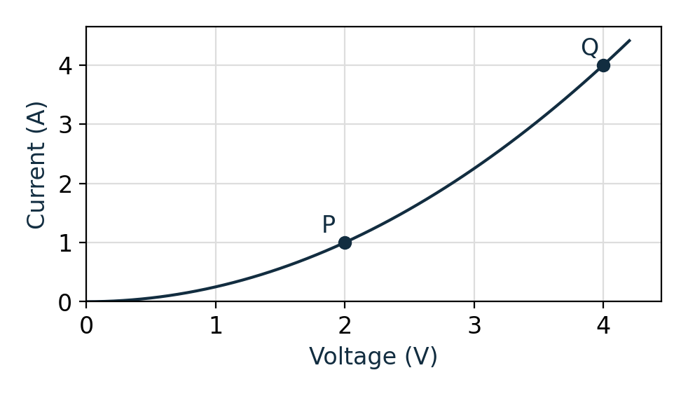
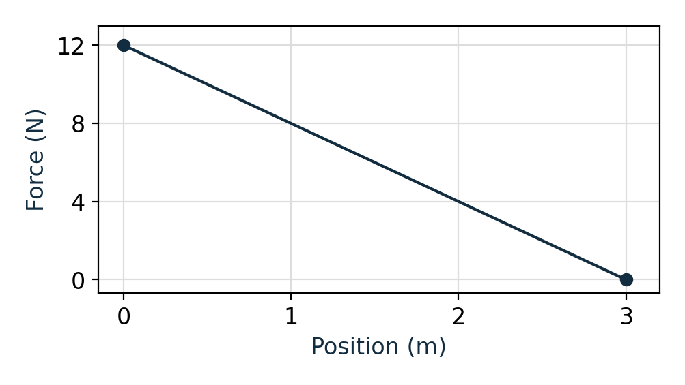
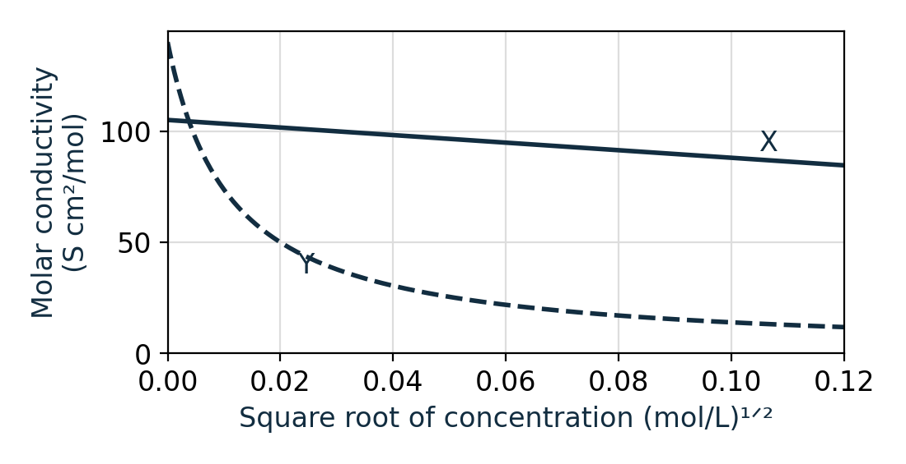
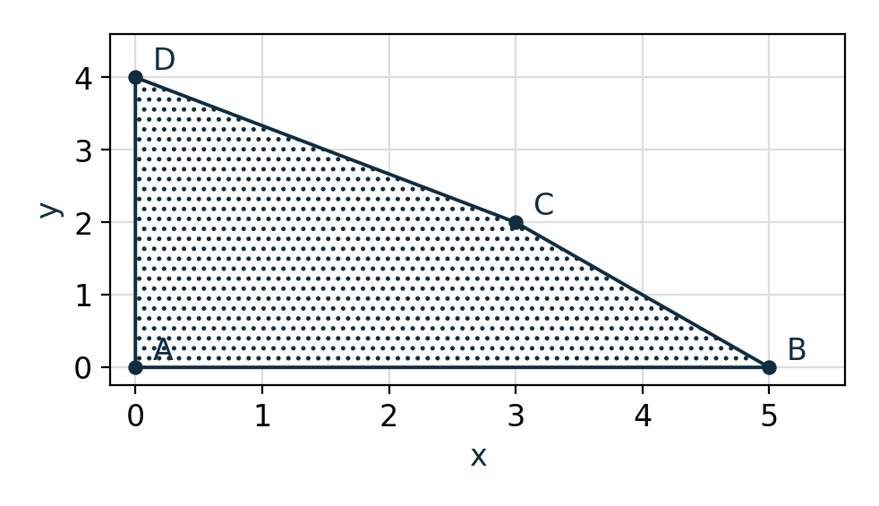

COMEDK UGET Test 6
180 minutes · 180 questions · +1 per correct answer · No negative marking
Physics
Q001. The critical angle for light escaping glass into air is c. If the air is replaced by a transparent liquid of index greater than air but less than glass, what happens to the critical angle?
A) It decreases
B) It increases
C) It stays fixed
D) It becomes zero
Worked solution
Answer: (B) It increases
Why and working: For a ray inside glass, sin c=n_out/n_glass. Raising the index outside enlarges this ratio, so its acute inverse sine increases.
Why not the others: (A) the ratio increases rather than decreases. (C) critical angle depends on both indices. (D) the ratio remains positive.
Q002. Which unit is equal to one kilowatt-hour?
A) 3.6 × 10³ J
B) 1.0 × 10³ W
C) 1.0 × 10³ J
D) 3.6 × 10⁶ J
Worked solution
Answer: (D) 3.6 × 10⁶ J
Why and working: One kilowatt-hour is 1000 W × 3600 s. Since W·s = J, this is 3.6 × 10⁶ J.
Why not the others: (A) omits the kilo factor. (B) watts measure power rather than energy. (C) uses one second instead of one hour.
Q003. In constructing specular reflection at a stationary plane mirror, two points of the incoming wavefront strike the mirror Δt apart. How far does the first reflected secondary wavelet spread in that interval, if the wave speed is c?
A) cΔt
B) cΔt/2
C) 2cΔt
D) Zero
Worked solution
Answer: (A) cΔt
Why and working: Reflection takes place back in the same medium. In time Δt the wavelet increases its radius by cΔt, the distance the last incident point travels in that interval.
Why not the others: (B) there is no speed halving. (C) the radius is a one-way propagation distance. (D) the first wavelet spreads as soon as it is generated.
Q004. A metal’s stopping potential is 1.0 V at frequency f and 2.5 V at 2f. What is its work function?
A) 1.0 eV
B) 1.5 eV
C) 2.5 eV
D) 0.50 eV
Worked solution
Answer: (D) 0.50 eV
Why and working: The difference gives hf = 1.5 eV since eV_s = hf−φ. At f the kinetic energy is 1.0 eV, leaving φ = 0.50 eV.
Why not the others: (A) this is the first kinetic energy. (B) this is the photon energy hf. (C) this is the second kinetic energy.
Q005. A boat position relative to a moving ferry changes 6 m east. The ferry moves 10 m west relative to shore during that interval. What is the boat’s displacement relative to shore?
A) 16 m east
B) 4 m east
C) 6 m east
D) 4 m west
Worked solution
Answer: (D) 4 m west
Why and working: Relative displacements add: taking east as positive gives +6−10=−4 m.
Why not the others: (A) adds magnitudes in the wrong direction. (B) the ferry displacement dominates. (C) this is the boat’s ferry-frame displacement.
Q006. In hydrogen, the fourth Bohr orbit has radius r. What is the radial difference between this orbit and the third?
A) r/16
B) 3r/4
C) 7r/16
D) r/4
Worked solution
Answer: (C) 7r/16
Why and working: The radius scales as n². The third radius is 9r/16, so subtracting from r gives 7r/16.
Why not the others: (A) uses the ground-orbit radius. (B) uses a linear level ratio. (D) uses the fractional change in n.
Q007. Four separated nucleons have combined mass m. A bound nucleus formed from them has mass m−δ. If it is split into two lighter nuclei with combined mass m−δ/4, what energy must be supplied?
A) 3δc²/4
B) δc²/4
C) 5δc²/4
D) −3δc²/4
Worked solution
Answer: (A) 3δc²/4
Why and working: Rest mass rises by (m−δ/4)−(m−δ)=3δ/4. The minimum supplied energy equals that increase times c².
Why not the others: (B) uses the final binding deficit alone. (C) adds the two deficits. (D) a higher product mass requires positive energy.
Q008. A drone flies 3 m/s north relative to the air while the wind blows 4 m/s east. Which pair gives the drone’s ground speed and its eastward velocity component?
A) 7 m/s and 4 m/s
B) 5 m/s and 5 m/s
C) 1 m/s and 3 m/s
D) 5 m/s and 4 m/s
Worked solution
Answer: (D) 5 m/s and 4 m/s
Why and working: The two frame velocities are perpendicular. Their vector sum has components (4,3), giving magnitude √(16+9)=5 and eastward component 4.
Why not the others: (A) adds scalar magnitudes. (B) confuses the norm with one projection. (C) subtracts perpendicular speeds.
Q009. A crystal of silicon is doped with boron and another with phosphorus. Which statement holds without assuming the two dopant concentrations are equal?
A) Both samples have electrons as majority carriers
B) Boron creates a net positive bulk charge equal to its hole density
C) Phosphorus acts as an acceptor
D) Holes dominate in the boron sample and electrons dominate in the phosphorus sample
Worked solution
Answer: (D) Holes dominate in the boron sample and electrons dominate in the phosphorus sample
Why and working: Trivalent boron introduces acceptor sites and holes. Pentavalent phosphorus donates electrons. The ionised dopants help balance the carrier charge in the bulk.
Why not the others: (A) boron gives p-type material. (B) the ionised acceptors balance the mobile holes. (C) phosphorus has an extra valence electron to donate.
Q010. A line has charge density 2 μC/m over its first metre and −1 μC/m over its next two metres. What is its total charge?
A) 0 μC
B) 1 μC
C) 4 μC
D) −1 μC
Worked solution
Answer: (A) 0 μC
Why and working: Integrate by segments: (2)(1)+(−1)(2)=0 μC.
Why not the others: (B) sums densities without the segment lengths. (C) adds charge magnitudes. (D) reports the second density as a charge.
Q011. A puck moves on a smooth horizontal table. After a short sideways push ends, its new velocity is northeast. What does it do next?
A) Returns gradually to its original velocity
B) Keeps accelerating northeast
C) Moves northeast at constant velocity
D) Moves north because the push was sideways
Worked solution
Answer: (C) Moves northeast at constant velocity
Why and working: After the push the horizontal net force vanishes, so its post-push velocity is maintained.
Why not the others: (A) earlier velocities do not overwrite the current one. (B) acceleration requires net force. (D) both velocity components persist.
Q012. Two equal positive charges lie at opposite ends of a diameter. A third point is on their perpendicular bisector. Which other point is guaranteed to have the same potential?
A) Its reflection about the diameter
B) The midpoint of the diameter
C) Any point at equal distance from one of the charges
D) Any point on the diameter
Worked solution
Answer: (A) Its reflection about the diameter
Why and working: Reflection keeps the distance to each fixed source unchanged. Both scalar potential contributions are therefore preserved.
Why not the others: (B) the midpoint generally changes both distances. (C) the second distance must also be accounted for. (D) positions along the diameter do not share one potential.
Q013. The graph shows the measured current of a component at labelled points P and Q. Compare the static resistances V/I at these points.

A) They are 1 Ω at P and 2 Ω at Q
B) They are equal since both currents are positive
C) They are both 0.5 Ω
D) They are 2 Ω at P and 1 Ω at Q
Worked solution
Answer: (D) They are 2 Ω at P and 1 Ω at Q
Why and working: The graph gives P=(2 V,1 A) and Q=(4 V,4 A). Thus V/I falls from 2 Ω to 1 Ω.
Why not the others: (A) exchanges the two points. (B) the voltage-to-current ratios differ. (C) 0.5 is the reciprocal ratio at P.
Q014. The graph shows the force on an object as it moves along +x from zero. How far must it travel from zero for this force to do 16 J?

A) 1 m
B) 3 m
C) 4/3 m
D) 2 m
Worked solution
Answer: (D) 2 m
Why and working: F=12−4x over this range. Work to a is 12a−2a². Setting it to 16 gives a=2 or 4, and only 2 lies in [0,3].
Why not the others: (A) the area through 1 m is 10 J. (B) the full triangular area is 18 J. (C) this assumes the initial force stays constant.
Q015. A circular Amperian path is centred on a long straight wire. An extra straight wire is placed outside the path. Which quantity around the path stays fixed when the added current is switched on?
A) The magnetic field at every point
B) The closed line integral of the total magnetic field
C) The total field’s tangent direction at every point
D) The net current in both physical wires combined
Worked solution
Answer: (B) The closed line integral of the total magnetic field
Why and working: Ampère’s law fixes the integral through the enclosed current only. An external wire may change local fields without changing the integral.
Why not the others: (A) superposition changes local fields. (C) the new contribution need not be tangent. (D) total current in the two wires changes.
Q016. A freely pivoted bar magnet is slightly displaced from parallel alignment with a uniform field and released. What is the initial effect of the torque?
A) It drives the magnet toward antiparallel alignment
B) It turns the magnet back toward parallel alignment
C) It is zero for every small displacement
D) It translates the pivot without rotation
Worked solution
Answer: (B) It turns the magnet back toward parallel alignment
Why and working: A small tilt gives nonzero torque directing the moment toward the field, making parallel alignment stable.
Why not the others: (A) antiparallel alignment is unstable. (C) only exactly collinear orientations have zero torque. (D) a uniform field gives torque without net force.
Q017. Two skaters initially at rest push apart. A has twice B’s mass. When B is 6 m east of the starting location, where is A if no net external force acts?
A) 12 m west
B) 3 m east
C) 3 m west
D) 6 m west
Worked solution
Answer: (C) 3 m west
Why and working: The centre of mass stays fixed. Taking east positive and m_B=m gives 2mx_A+m(6)=0, so x_A=−3 m.
Why not the others: (A) the heavier body moves less. (B) the positions are on opposite sides. (D) equal distances require equal masses.
Q018. Treat out of the page as the positive flux direction for a flat loop. The external flux through it is becoming more negative. Which way is the induced field through the loop?
A) Into the page
B) In the plane of the loop
C) Out of the page
D) Always zero
Worked solution
Answer: (C) Out of the page
Why and working: With outward positive, decreasing signed flux creates an outward induced field to oppose the decrease.
Why not the others: (A) would reinforce the change. (B) an in-plane field contributes no flux through the loop. (D) a changing flux induces emf.
Q019. In a series AC circuit the inductor and capacitor have equal reactance magnitudes. How is the current phasor oriented relative to the supply voltage phasor when resistance is positive?
A) It is 90° ahead
B) It is 90° behind
C) It is in phase
D) It is opposite
Worked solution
Answer: (C) It is in phase
Why and working: The inductive and capacitive voltage phasors cancel. The remaining resistor voltage and current are in phase.
Why not the others: (A) the residual load is not purely capacitive. (B) the residual load is not purely inductive. (D) positive resistance gives a voltage in the current direction.
Q020. At perihelion and aphelion a planet’s velocity is perpendicular to its radius vector. If the aphelion distance is three times the perihelion distance, how do the speeds compare?
A) Aphelion speed is three times perihelion speed
B) Perihelion speed is √3 times aphelion speed
C) They are equal
D) Perihelion speed is three times aphelion speed
Worked solution
Answer: (D) Perihelion speed is three times aphelion speed
Why and working: Kepler’s area law gives the same r·v at these turning points. A radius ratio of 3 therefore gives an inverse speed ratio of 3.
Why not the others: (A) reverses conservation scaling. (B) uses circular speed scaling in the same ellipse. (C) equal area rates do not require equal speeds.
Q021. Which listed wave can probe a crystal lattice through diffraction because its typical wavelength is comparable with atomic spacing?
A) X-rays
B) Broadcast radio waves
C) Ordinary visible green light
D) Infrared used for a television remote
Worked solution
Answer: (A) X-rays
Why and working: X-ray wavelengths can be comparable to lattice spacings, allowing appreciable diffraction angles.
Why not the others: (B) broadcast wavelengths are far larger. (C) visible wavelengths are too long for typical atomic spacing. (D) remote-control infrared has far longer wavelength.
Q022. An optical fibre bends sharply enough that a core ray strikes the cladding at a lower angle from the normal than the critical angle. What change can explain loss of light?
A) The ray must reflect more completely
B) The ray can refract into the cladding
C) The cladding index automatically becomes zero
D) Every such ray stops at the interface
Worked solution
Answer: (B) The ray can refract into the cladding
Why and working: TIR requires incidence above the critical angle. Below it a transmitted ray can carry energy into the cladding.
Why not the others: (A) lowering incidence past threshold weakens confinement. (C) bending does not make refractive index zero. (D) the optical field can propagate across the interface.
Q023. A wire is under tensile stress 80 MPa and remains in the linear elastic range. Its strain is 0.001. What strain results at 120 MPa for the same wire?
A) 0.00067
B) 0.0015
C) 0.0020
D) 0.12
Worked solution
Answer: (B) 0.0015
Why and working: Hooke’s law in this range gives stress = Young modulus × strain. The stress factor 120/80=1.5 gives the same strain factor.
Why not the others: (A) inverts the proportionality. (C) would require twice the initial stress. (D) does not use the material’s elastic proportionality.
Q024. In a two-source interference experiment, each source alone contributes intensity I at one point. The coherent phase difference is π. What intensity follows there?
A) I
B) Zero
C) 2I
D) 4I
Worked solution
Answer: (B) Zero
Why and working: The equal field amplitudes are opposite at phase π, so they cancel before the resultant amplitude is squared.
Why not the others: (A) both fields act simultaneously. (C) adds intensities without interference. (D) applies to equal in-phase amplitudes.
Q025. Two beams illuminate identical perfectly absorbing targets normally. Their photon rates satisfy N_A=2N_B and their wavelengths satisfy λ_A=4λ_B. What is the radiation force ratio F_A/F_B?
A) 2
B) 8
C) 1/2
D) 1/8
Worked solution
Answer: (C) 1/2
Why and working: Each absorbed photon delivers h/λ. Hence F_A/F_B=(N_A/N_B)(λ_B/λ_A)=2/4=1/2.
Why not the others: (A) counts photons alone. (B) wavelength belongs in the denominator. (D) inverts the photon-count ratio as well.
Q026. A straight tank holds a layer of oil of density 800 kg/m³ over water of density 1000 kg/m³. The oil is 0.50 m thick and the water 0.30 m thick. With g=10 m/s², what is the bottom gauge pressure?
A) 7000 Pa
B) 4000 Pa
C) 3000 Pa
D) 8000 Pa
Worked solution
Answer: (A) 7000 Pa
Why and working: Pressure increments add: Δp=g(ρ_o h_o+ρ_w h_w)=10(400+300)=7000 Pa.
Why not the others: (B) counts only oil. (C) counts only water. (D) uses water density for the full depth.
Q027. In which of two hydrogen Bohr orbits, n=2 or n=5, is the magnitude of total energy greater?
A) n=5
B) They are equal
C) n=2
D) Neither has nonzero total energy
Worked solution
Answer: (C) n=2
Why and working: The magnitude is proportional to 1/n². The smaller principal quantum number is more tightly bound.
Why not the others: (A) the energy value rises toward zero with n but its magnitude falls. (B) the levels have different energies. (D) each bound level has negative energy.
Q028. On the binding-energy-per-nucleon curve, a very heavy nucleus can split into intermediate nuclei. Which direction on the vertical scale makes this energetically favourable?
A) Toward greater binding energy per nucleon
B) Toward smaller binding energy per nucleon
C) Toward higher rest energy per nucleon
D) The scale cannot inform this comparison
Worked solution
Answer: (A) Toward greater binding energy per nucleon
Why and working: With nucleon count essentially fixed, greater average binding means greater total binding and lower final rest mass.
Why not the others: (B) the reverse trend would require energy. (C) a larger product rest energy requires input. (D) binding and rest mass are linked.
Q029. An insulated bath contains two solids in thermal contact. Their temperatures are initially 60 °C and 30 °C. Which observation identifies approach to thermal equilibrium?
A) Equal heat capacities are required for any transfer
B) Thermal energy must flow from the cooler solid to the hotter one unaided
C) Both solids must reach exactly 45 °C regardless of heat capacities
D) The temperature gap shrinks as heat passes from the hotter body to the cooler one
Worked solution
Answer: (D) The temperature gap shrinks as heat passes from the hotter body to the cooler one
Why and working: Heat flows spontaneously down the temperature difference. Their final shared temperature depends on their heat capacities.
Why not the others: (A) different heat capacities still allow transfer. (B) this reverses spontaneous heat flow. (C) the arithmetic mean needs equal heat capacities.
Q030. Before a p–n junction reaches equilibrium, holes initially diffuse from which side to which, and what fixed charge is exposed on their original side?
A) From p to n, leaving positively charged donor ions
B) From n to p, leaving negatively charged acceptor ions
C) From p to n, leaving negatively charged acceptor ions
D) There is no carrier diffusion during junction formation
Worked solution
Answer: (C) From p to n, leaving negatively charged acceptor ions
Why and working: Holes are abundant on the p side, so their concentration gradient drives them toward n. Losing mobile positive charge exposes negative acceptors in p.
Why not the others: (A) positive donor ions are on the n side. (B) reverses the initial hole gradient. (D) diffusion initiates depletion.
Q031. Which comparison is valid when an electrostatic field is drawn using equal-flux conventions?
A) Close lines always indicate negative potential
B) A line tangent shows the direction of force on an electron
C) Closer field lines indicate greater local field magnitude
D) Line intersections are expected when fields reinforce
Worked solution
Answer: (C) Closer field lines indicate greater local field magnitude
Why and working: With consistent drawing conventions, more lines per area means greater field magnitude. The tangent gives the force direction for positive test charge.
Why not the others: (A) field strength does not set the potential sign. (B) electron force is opposite the field. (D) the total field has a unique direction when nonzero.
Q032. A and B each separately show no net heat exchange with the same thermometer. What justifies the conclusion that A and B have the same temperature?
A) Newton’s law of cooling alone
B) Energy conservation alone
C) Equal masses of A and B
D) The zeroth law of thermodynamics
Worked solution
Answer: (D) The zeroth law of thermodynamics
Why and working: Thermal equilibrium is transitive: equilibrium with a common third system implies equilibrium between A and B.
Why not the others: (A) a cooling law describes rates. (B) conservation alone does not establish transitivity. (C) masses are irrelevant to equal temperature.
Q033. Three point charges are at the corners of an equilateral triangle of side a. Two are +q. What must the third charge be for the total pair potential energy to vanish?
A) −q
B) −q/2
C) +q/2
D) Zero
Worked solution
Answer: (B) −q/2
Why and working: For third charge Q the sum is k(q²+2qQ)/a. Setting the numerator to zero yields Q=−q/2.
Why not the others: (A) would leave a negative net sum. (C) adds positive pair energy. (D) leaves the positive pair’s contribution.
Q034. A resistor dissipates 18 W at a fixed supply. It is replaced by two identical copies in series at that same voltage. What energy do the two resistors together dissipate in 20 s?
A) 180 J
B) 360 J
C) 90 J
D) 720 J
Worked solution
Answer: (A) 180 J
Why and working: The equivalent resistance doubles. At fixed voltage total power V²/R halves to 9 W, and 9×20=180 J.
Why not the others: (B) uses the original power. (C) computes one resistor’s share. (D) assumes doubling R doubles power at fixed V.
Q035. An ideal gas is compressed isothermally to one quarter of its initial volume. By what factor does its pressure change?
A) 4
B) 1/4
C) 2
D) 1
Worked solution
Answer: (A) 4
Why and working: At fixed amount and temperature, pV is constant. Replacing V by V/4 requires four times the pressure.
Why not the others: (B) uses direct proportionality. (C) there is no square root. (D) constant temperature does not fix pressure.
Q036. For a long solenoid, which observation would identify its internal field in the uniform central approximation?
A) They point outward in all radial directions
B) Compass needles at different nearby central locations point along the same axis and sense
C) They alternate direction from turn to turn
D) They have no preferred orientation
Worked solution
Answer: (B) Compass needles at different nearby central locations point along the same axis and sense
Why and working: The turns reinforce an approximately uniform axial field far from the ends.
Why not the others: (A) radial components cancel by symmetry. (C) windings reinforce the same axial sense. (D) a nonzero field aligns a compass.
Q037. The field of a bar magnet is mapped with a small compass at a point directly above its middle on the equatorial line. Two students draw the same smooth magnetic field lines, but the second reverses all arrowheads. What distinguishes their predictions for the compass?
A) The north-seeking end is always perpendicular to both drawings
B) Both drawings give the same orientation of the north-seeking end
C) The north-seeking end would point in opposite directions in the two drawings
D) The drawings predict different force magnitudes solely from arrow reversal
Worked solution
Answer: (C) The north-seeking end would point in opposite directions in the two drawings
Why and working: A compass aligns along the local tangent with its north-seeking end following the field arrow. Reversing the arrows reverses the predicted orientation without changing the line density.
Why not the others: (A) the needle aligns with the field tangent. (B) the end is directional. (D) arrow reversal alone does not change density.
Q038. A periodic signal goes from a crest to its immediately following trough in 5 ms. What is the full period if the signal is sinusoidal?
A) 10 ms
B) 5 ms
C) 2.5 ms
D) 20 ms
Worked solution
Answer: (A) 10 ms
Why and working: A crest and adjacent trough differ by phase π, half a full 2π cycle. The full duration is 10 ms.
Why not the others: (B) this is half a period. (C) divides the already half-period time again. (D) would place the trough at a quarter cycle.
Q039. An inductor gives 6 V opposing a uniform current rise of 3 A/s. Which change makes the magnitude 3 V for the same inductor?
A) Make the rise 6 A/s
B) Keep the rise at 3 A/s and double the current offset
C) Make the rise 1.5 A/s
D) Reverse the current slope but keep its magnitude
Worked solution
Answer: (C) Make the rise 1.5 A/s
Why and working: Induced magnitude is L times the slope magnitude, with L=6/3=2 H. Halving the slope yields 3 V.
Why not the others: (A) would double the emf. (B) the slope is unchanged by a fixed offset. (D) only the sign would change.
Q040. In an ideal series LCR circuit tuned to resonance, which individual voltage may exceed the source voltage without violating the phasor sum?
A) The voltage across L, if the opposing voltage across C is equally large
B) The resistor voltage, because it cancels the source
C) All three voltages simultaneously in phase
D) No individual reactive voltage can ever exceed the source voltage
Worked solution
Answer: (A) The voltage across L, if the opposing voltage across C is equally large
Why and working: The reactive phasors oppose at resonance and sum to zero. Each may be large compared with the in-phase source voltage.
Why not the others: (B) the resistor’s voltage equals the supply at resonance. (C) the reactive phasors are opposite. (D) phasors cancel rather than add as magnitudes.
Q041. A sound pulse passes through still air. Which motion marks it as longitudinal?
A) Air elements continuously drift with the pulse
B) Air elements oscillate parallel to the direction of propagation
C) Air elements oscillate perpendicular to propagation
D) Air translates as a rigid block
Worked solution
Answer: (B) Air elements oscillate parallel to the direction of propagation
Why and working: Sound in air propagates as successive compressions and rarefactions. Displacements of the medium are along the propagation direction.
Why not the others: (A) particles need not follow the pulse. (C) perpendicular motion is transverse. (D) local oscillations make spatial pressure variations.
Q042. At a spherical interface from glass of index 1.50 to air, the centre of curvature is 10 cm to the left. An object is moved rightward from 60 cm to 30 cm left of the interface. How does its paraxial image change?
A) From a virtual image 40 cm left to parallel output
B) From a real image 40 cm right to parallel output
C) From parallel output to a real image 40 cm right
D) It remains 40 cm right
Worked solution
Answer: (B) From a real image 40 cm right to parallel output
Why and working: With R=−10 cm, n₂/v=0.05+1.50/u. At u=−60 cm this gives 1/v=0.025 and v=+40 cm. At u=−30 cm the terms cancel, so the transmitted rays are parallel.
Why not the others: (A) the initial inverse image distance is positive. (C) the positions are reversed. (D) changing u changes the outgoing vergence.
Q043. In two YDSE setups with equal screen distances, the bright order m=3 of A coincides with bright order m=2 of B, both measured from the common centre. What is β_A/β_B?
A) 3/2
B) 2/3
C) 1
D) 6
Worked solution
Answer: (B) 2/3
Why and working: Bright-order locations satisfy 3β_A=2β_B because each is an integer multiple of its own fringe width.
Why not the others: (A) reverses the ratio. (C) different orders can meet at unequal fringe widths. (D) product of orders is not the ratio.
Q044. Which is an SI derived unit expressed correctly in base units?
A) Pa = kg m s⁻²
B) Pa = kg m² s⁻²
C) Pa = kg m⁻¹ s⁻²
D) Pa = kg s⁻¹
Worked solution
Answer: (C) Pa = kg m⁻¹ s⁻²
Why and working: A pascal is one newton per square metre. Divide kg m s⁻² by m².
Why not the others: (A) this is a newton. (B) this is a joule. (D) the length and time dimensions are both wrong.
Q045. A particle’s momentum doubles without a change in direction. What happens to the spacing between adjacent phase crests of its de Broglie wave?
A) It halves
B) It doubles
C) It remains fixed
D) It becomes one quarter
Worked solution
Answer: (A) It halves
Why and working: Adjacent phase crests are one wavelength apart. Since λ=h/p, doubling p halves this spacing.
Why not the others: (B) reverses momentum dependence. (C) direction alone does not specify wavelength. (D) the dependence is inverse first power.
Q046. Which transition cannot give a hydrogen emission line belonging to a series whose final level is n=2?
A) n=4 to n=1
B) n=5 to n=2
C) n=4 to n=2
D) n=3 to n=2
Worked solution
Answer: (A) n=4 to n=1
Why and working: A spectral series groups downward transitions by common final level. The transition to n=1 belongs to a different series.
Why not the others: (B) this terminates at n=2. (C) this also terminates at n=2. (D) this is the first line of the n=2 series.
Q047. A position trace is straight from t=0 to t=3 s, then curves with gently rising slope. What changes at the second stage?
A) Velocity varies because the slope varies
B) Velocity stays constant because position stays continuous
C) The displacement becomes zero
D) Speed is determined by the area under the position graph
Worked solution
Answer: (A) Velocity varies because the slope varies
Why and working: The tangent slope of position against time is velocity. A changing slope means changing velocity.
Why not the others: (B) continuous position does not imply constant derivative. (C) displacement depends on endpoint positions. (D) area under position does not give speed.
Q048. Which classification fits splitting a heavy nucleus into two sizeable nuclei after neutron capture, compared with two light nuclei joining into one?
A) Both are fission because both can release energy
B) Both are fusion because neutrons can be involved
C) The first is fusion and the second is fission
D) The first is fission and the second is fusion
Worked solution
Answer: (D) The first is fission and the second is fusion
Why and working: Classify by the nuclear change: division into substantial fragments is fission, joining light nuclei is fusion.
Why not the others: (A) energy release does not distinguish the mechanisms. (B) a captured neutron does not make the dominant process fusion. (C) the labels are reversed.
Q049. In the forward region of a nonideal diode I–V curve, what does a large rise in current from a small rise in bias above the knee imply?
A) Its incremental resistance must equal its reverse-bias value
B) It follows a single straight-line Ohm law through the origin
C) The diode’s incremental resistance ΔV/ΔI is small there
D) It turns into an open circuit
Worked solution
Answer: (C) The diode’s incremental resistance ΔV/ΔI is small there
Why and working: A small voltage increment divided by a large current increment gives low incremental resistance. This describes the local slope and can change with bias.
Why not the others: (A) reverse current varies very little over moderate reverse bias. (B) the knee implies a changing slope. (D) an open circuit would carry no current.
Q050. Coordinates of a moving object are measured with two stationary origins separated by 5 m. Which statement is true for displacement during the same interval?
A) Their displacements differ by 5 m
B) Only the observer at the first origin can calculate a displacement
C) The two displacement directions must be opposite
D) Both observers calculate the same displacement
Worked solution
Answer: (D) Both observers calculate the same displacement
Why and working: Changing the origin adds a constant offset to both endpoint coordinates. It cancels when final position minus initial position is taken.
Why not the others: (A) 5 m is a position offset. (B) both observers can form endpoint differences. (C) the same axes give the same displacement.
Q051. A small compass is at a short bar magnet’s equatorial point. Its magnetic moment initially points perpendicular to the magnet’s dipole moment. What torque trend occurs as it begins turning toward the local field?
A) It starts at zero and grows to a maximum at alignment
B) It stays zero since the field is equatorial
C) It keeps growing until the compass is antiparallel to the field
D) The torque magnitude starts largest and decreases toward zero
Worked solution
Answer: (D) The torque magnitude starts largest and decreases toward zero
Why and working: The local equatorial field is along the magnet axis, so the initial angle is 90°. Rotating toward alignment reduces the sine of that angle, and hence torque magnitude.
Why not the others: (A) a 90° tilt gives maximum torque. (B) the equatorial field is nonzero. (C) antiparallel alignment also has zero torque.
Q052. A metal sphere and a neutral dielectric block are separately placed near a positive charge, with no contact. What distinction holds at electrostatic equilibrium?
A) Both objects must acquire positive net charge
B) Both must have zero internal macroscopic field everywhere
C) Mobile charges redistribute in the metal while bound charges shift or reorient locally in the dielectric
D) Only the metal can develop a dipole-like response
Worked solution
Answer: (C) Mobile charges redistribute in the metal while bound charges shift or reorient locally in the dielectric
Why and working: Conductors contain mobile charge that rearranges until their internal field vanishes. The dielectric polarises through small bound-charge changes, generally retaining a reduced internal field.
Why not the others: (A) neither isolated neutral body needs net charge transfer. (B) that field condition is for the conducting interior. (D) a dielectric can polarise.
Q053. A body’s momentum changes by 6 kg·m/s east in 2 s. What is the average net force?
A) 12 N east
B) 3 N east
C) 3 N west
D) 6 N east
Worked solution
Answer: (B) 3 N east
Why and working: Average force is the momentum change divided by elapsed time. The sign and direction match the change.
Why not the others: (A) multiplies instead of divides. (C) the momentum change is eastward. (D) this is the numerical momentum change.
Q054. A uniform metal wire has resistivity ρ. Warming increases it by 10%, and dimensions are treated as fixed. How does conductivity change?
A) It becomes 1.10σ
B) It stays fixed
C) It becomes 0.10σ
D) It becomes σ/1.10
Worked solution
Answer: (D) It becomes σ/1.10
Why and working: Conductivity is 1/ρ. Increasing ρ by factor 1.10 means dividing σ by 1.10.
Why not the others: (A) uses direct proportionality. (B) ignores the material change. (C) subtracting the fractional rise is not the reciprocal rule.
Q055. Equal-speed positive ions have velocity perpendicular to the same crossed electric and magnetic fields. One ion has twice the charge of another. If the first passes undeflected, what happens to the second?
A) It also passes undeflected
B) It deflects twice as much
C) It deflects half as much
D) It must reverse immediately
Worked solution
Answer: (A) It also passes undeflected
Why and working: The zero-force condition is E+v×B=0. A different nonzero q multiplies both forces equally, so cancellation survives.
Why not the others: (B) each force scales but their sum stays zero. (C) the cancellation condition has no charge factor. (D) zero net force retains its velocity.
Q056. A block has kinetic energy 12 J before crossing a rough patch. Friction does −5 J and an applied force does +2 J. What is its final kinetic energy?
A) 15 J
B) 5 J
C) 3 J
D) 9 J
Worked solution
Answer: (D) 9 J
Why and working: The net work is −5+2=−3 J. By the work–energy theorem the final kinetic energy is 12−3=9 J.
Why not the others: (A) uses the wrong sign of net work. (B) subtracts both magnitudes from the initial energy. (C) reports only the magnitude of the change.
Q057. An unknown specimen is weakly attracted to a magnet and has negligible remanence. Another is weakly repelled. What distinguishes the directions of their induced magnetic moments?
A) Both moments necessarily oppose the field
B) The attracted specimen develops a moment along the applied field; the repelled specimen develops one opposing it
C) The attracted specimen’s moment opposes the field; the repelled specimen’s aligns with it
D) Neither specimen develops any response
Worked solution
Answer: (B) The attracted specimen develops a moment along the applied field; the repelled specimen develops one opposing it
Why and working: The first is consistent with paramagnetism and the second with diamagnetism in this ideal comparison. Opposing moments are driven toward weaker fields, aligned ones toward stronger fields.
Why not the others: (A) only the second opposes the field. (C) the signs are swapped. (D) both observed forces show a response.
Q058. Two fixed coils have mutual inductance 0.20 H in one orientation. Turning the secondary changes the magnetic linkage so the mutual inductance drops to 0.05 H. For the same primary current ramp afterward, how does the secondary emf magnitude change?
A) It quadruples
B) It becomes one quarter of the original
C) It is unchanged
D) It becomes one half
Worked solution
Answer: (B) It becomes one quarter of the original
Why and working: After rotation the linkage per current is one quarter. Faraday’s law gives emf magnitude M times the unchanged primary current slope.
Why not the others: (A) inverts the ratio. (C) ignores the change of coupling. (D) 0.05/0.20 is one quarter.
Q059. A horizontal uniform rod of length 6 m and mass 3 kg carries a 1 kg point mass at its left tip. At which point from the left tip is the combined centre of mass?
A) 3 m
B) 1.5 m
C) 2.25 m
D) 4.5 m
Worked solution
Answer: (C) 2.25 m
Why and working: The rod contributes its mass at x=3 m and the tip mass at zero. Then x_CM=(3×3+1×0)/(3+1)=2.25 m.
Why not the others: (A) ignores the additional mass. (B) treats the two masses as equally weighted. (D) does not use the rod midpoint correctly.
Q060. Two loads use the same rms supply voltage and draw the same rms current. The first is purely resistive. The second draws half as much real power. What phase angle magnitude applies to the second?
A) 30°
B) 60°
C) 45°
D) 90°
Worked solution
Answer: (B) 60°
Why and working: The resistive load has power VI. The second has VI cos φ, and the ratio is 1/2, so φ=60°.
Why not the others: (A) cos 30° is √3/2. (C) cos 45° is 1/√2. (D) cos 90° gives zero real power.
Chemistry
Q061. An ideal solution contains a nonvolatile solute with mole fraction 0.12. If the pure solvent pressure is 50 mmHg, what is the pressure lowering?
A) 44 mmHg
B) 0.12 mmHg
C) 12 mmHg
D) 6 mmHg
Worked solution
Answer: (D) 6 mmHg
Why and working: Raoult’s law gives Δp = p° x_solute = 50×0.12 = 6 mmHg.
Why not the others: (A) this is the lowered solvent pressure. (B) mole fraction itself has no units. (C) the percentage is not the pressure in mmHg.
Q062. In hydrogen peroxide H₂O₂, what oxidation number must each oxygen have?
A) −2
B) 0
C) +1
D) −1
Worked solution
Answer: (D) −1
Why and working: Hydrogen is +1 and the neutral molecule gives 2(+1)+2x=0, so x=−1.
Why not the others: (A) the O–O peroxide constraint differs from ordinary oxides. (B) oxygen is not elemental in this compound. (C) this would leave a positive total.
Q063. Two dilution curves are shown for electrolytes X and Y. Both rise toward finite limiting molar conductivity. Which is the weak electrolyte based on its much stronger curvature and fractional rise on dilution?

A) X
B) Both necessarily
C) Y
D) Neither because both conduct
Worked solution
Answer: (C) Y
Why and working: X changes modestly. Y rises steeply from a much smaller fraction of its limiting value, consistent with increased ionisation on dilution of a weak electrolyte.
Why not the others: (A) X resembles the modest mobility change of a strong electrolyte. (B) conduction does not imply weak dissociation. (D) weak electrolytes conduct through the ions they produce.
Q064. A zero-order reaction has half-life 8 min at initial concentration 0.40 M. How long after the start is [A]=0.10 M?
A) 12 min
B) 16 min
C) 4 min
D) 24 min
Worked solution
Answer: (A) 12 min
Why and working: The concentration falls by 0.20 M in 8 min, giving slope −0.025 M/min. Falling by 0.30 M at the same rate takes 12 min.
Why not the others: (B) this assumes equal times for two successive halvings. (C) 0.10 M is not lost in total. (D) uses twice the required concentration loss.
Q065. Which observation in Lassaigne’s test supports the presence of nitrogen in an organic compound?
A) A violet flame without an extract
B) A colourless distillate from heating the compound alone
C) A Prussian blue product after treating the sodium fusion extract with iron salts
D) A white sulfate residue after complete combustion
Worked solution
Answer: (C) A Prussian blue product after treating the sodium fusion extract with iron salts
Why and working: Nitrogen and carbon form cyanide in the sodium fusion extract. Iron treatment can generate a deep blue iron cyanide complex as the diagnostic observation.
Why not the others: (A) flame colour is a different elemental test. (B) absence of colour is not the nitrogen test. (D) sulfate would concern sulfur.
Q066. Which property is often associated with transition-metal interstitial carbides such as titanium carbide?
A) Loss of all electrical conduction by definition
B) A metallic host entirely replaced by carbon
C) High hardness relative to the parent metal
D) Complete absence of metal–carbon interaction
Worked solution
Answer: (C) High hardness relative to the parent metal
Why and working: Small interstitial atoms modify the metallic lattice and make these materials notably hard. A conducting metal framework may remain.
Why not the others: (A) interstitial compounds often retain metallic conductivity. (B) the interstitial positions are distinct. (D) there is a structural interaction.
Q067. Why can crystal field theory distinguish high-spin and low-spin octahedral ions of the same d count?
A) It compares orbital splitting with the cost of electron pairing
B) It assumes each ligand removes exactly one d electron
C) It makes spin depend only on the net charge of the complex
D) It assigns every d electron to a bonding hybrid orbital
Worked solution
Answer: (A) It compares orbital splitting with the cost of electron pairing
Why and working: For small splitting electrons can occupy upper levels before pairing. Large splitting can instead favour filling lower orbitals with pairs.
Why not the others: (B) d count is set by metal oxidation state. (C) ligand field strength also matters. (D) CFT analyses relative d orbital energies.
Q068. Which longest-chain name describes CH₃CH₂CH(CH₂CH₃)CH(CH₃)CH₂CH₃?
A) 3-ethyl-4-methylhexane
B) 4-ethyl-3-methylhexane
C) 3,4-diethylpentane
D) 2-ethyl-3-methylhexane
Worked solution
Answer: (A) 3-ethyl-4-methylhexane
Why and working: The longest path contains six carbons. Both numbering directions give locants 3 and 4, so the alphabetically first ethyl group receives 3.
Why not the others: (B) this gives methyl the smaller locant in the alphabetical tie. (C) the parent would be incorrectly shortened. (D) two carbons precede each branching site.
Q069. An electrophilic substitution product has Br on carbon 1 of benzene and NO₂ on carbon 4. How is this product described relative to its original substituent?
A) Ortho substitution
B) Meta substitution
C) Ipso substitution
D) Para substitution
Worked solution
Answer: (D) Para substitution
Why and working: The two positions are three ring edges apart and opposite on benzene. This 1,4 pattern is para.
Why not the others: (A) ortho corresponds to neighbouring positions. (B) meta corresponds to a separation of two edges. (C) ipso would occur at the carbon already bearing Br.
Q070. Which solvent is used in ordinary ethanol-based hand sanitiser formulations?
A) Methanol as the preferred skin-safe replacement
B) Ethanol diluted with water
C) Pure cyclohexane as an interchangeable alcohol
D) Phenol as the standard beverage alcohol
Worked solution
Answer: (B) Ethanol diluted with water
Why and working: Formulated aqueous ethanol can act as an antiseptic solvent. Methanol is toxic and is unsuitable as a replacement.
Why not the others: (A) methanol exposure is hazardous. (C) cyclohexane is a hydrocarbon. (D) phenol is a different compound and not beverage alcohol.
Q071. Which sample consists of molecules of a single element?
A) Water vapour
B) A pure sodium chloride crystal
C) Ozone gas
D) Air
Worked solution
Answer: (C) Ozone gas
Why and working: O₃ contains only oxygen atoms per molecule. The three atoms need not represent different elements.
Why not the others: (A) H and O are different elements. (B) NaCl contains two elements in an ionic lattice. (D) air is a mixture.
Q072. In the initial base-promoted aldol step of ethanal, which carbon supplies the attacking carbon of the enolate?
A) The electrophilic carbonyl carbon of that same enolate
B) The aldehyde oxygen
C) The methyl carbon next to the carbonyl
D) A carbon external to both ethanal molecules
Worked solution
Answer: (C) The methyl carbon next to the carbonyl
Why and working: Base removes an α-H from ethanal’s methyl group. The resulting enolate can act as a carbon nucleophile at that α-carbon.
Why not the others: (A) the other molecule’s carbonyl carbon is the electrophile. (B) the question asks for the carbon site. (D) both carbon fragments come from ethanal.
Q073. An aromatic diazonium ion couples with phenoxide at an available para site. What linkage joins the two aromatic parts?
A) −O−O−
B) −N=N−
C) −CO−
D) −NH−CH₂−
Worked solution
Answer: (B) −N=N−
Why and working: Azo coupling retains the diazonium nitrogens and creates the characteristic azo group between the rings.
Why not the others: (A) there is no peroxide bridge. (C) there is no carbonyl bridge. (D) this would require a different reduced linkage.
Q074. Rutherford’s model put much of an atom’s mass in a small positive nucleus. What could its ordinary classical-orbit picture not explain?
A) A tiny positive nucleus could repel an alpha particle
B) Most of the volume was not occupied by the nucleus
C) An accelerating orbiting electron should radiate and spiral inward rather than sustain a stable atom
D) A positive nucleus can contain most of the atomic mass
Worked solution
Answer: (C) An accelerating orbiting electron should radiate and spiral inward rather than sustain a stable atom
Why and working: Circular motion accelerates charge even at fixed speed. Classical radiation drains orbital energy, so stable electron motion needs a different explanation.
Why not the others: (A) electrostatic repulsion is part of Rutherford’s explanation. (B) a compact centre leaves most of the volume outside it. (D) that concentration of mass is a premise of the model.
Q075. Why can starch serve as a glucose reserve in plants?
A) Enzymatic hydrolysis can release glucose units from its glycosidic chains
B) Its units are nucleotides that turn directly into glucose
C) Its carbon atoms cannot participate in metabolism
D) It is composed of free glucose only, with no covalent links
Worked solution
Answer: (A) Enzymatic hydrolysis can release glucose units from its glycosidic chains
Why and working: Starch stores glucose in polymers. Enzymatic cleavage of the links can release metabolically usable carbohydrate.
Why not the others: (B) nucleotides form nucleic acids. (C) the released carbohydrate can be metabolised. (D) starch is covalently linked.
Q076. At the same molality an aqueous solution has ΔT_f=0.56 K and ΔT_b=0.15 K. The pure solvent constants are K_f=1.86 and K_b=0.50 K kg mol⁻¹. What common effective particle molality do the two measurements support?
A) About 0.15 mol/kg
B) About 0.56 mol/kg
C) About 1.2 mol/kg
D) About 0.30 mol/kg
Worked solution
Answer: (D) About 0.30 mol/kg
Why and working: ΔT_f/K_f≈0.56/1.86≈0.30 and ΔT_b/K_b=0.15/0.50=0.30. Both measure i times the analytical molality.
Why not the others: (A) this is the boiling elevation’s numerical value. (B) this is the freezing depression’s numerical value. (C) the temperature shifts must each be divided by their own constant.
Q077. Which comparison is meaningful for radii estimated by the usual textbook conventions?
A) Every tabulated atomic radius is half the same kind of bond length
B) A noble gas is typically assigned a van der Waals radius, whereas a bonded halogen can be assigned a covalent radius
C) A cation and its parent atom are assigned the same radius by definition
D) Ionic radius necessarily increases when an electron is removed from an atom
Worked solution
Answer: (B) A noble gas is typically assigned a van der Waals radius, whereas a bonded halogen can be assigned a covalent radius
Why and working: Noble gases are commonly unbonded, so a contact-based van der Waals measure is used. A bonded halogen can be assigned a radius from bond lengths.
Why not the others: (A) the operational definitions differ. (C) ion formation changes the electron cloud. (D) cations generally contract relative to the neutral parent.
Q078. What is the charge needed to deposit one mole of a metal from M³⁺ with complete current efficiency?
A) 3 F
B) F/3
C) F
D) 9 F
Worked solution
Answer: (A) 3 F
Why and working: Each M³⁺ consumes three electrons. One mole of ions therefore needs three moles of electrons, or three Faradays.
Why not the others: (B) divides by the electron count. (C) corresponds to a monovalent ion. (D) there is no squared-valence dependence.
Q079. Below the threshold collision energy for a reaction, what happens even when the two species meet with suitable orientation in the qualitative collision model?
A) It must react because geometry alone fixes the outcome
B) Its orientation increases its energy after separation
C) Every such collision changes the equilibrium constant
D) The encounter does not have enough energy to be effective
Worked solution
Answer: (D) The encounter does not have enough energy to be effective
Why and working: Effective collisions need both appropriate geometry and sufficient energy. Meeting just the orientation condition is insufficient.
Why not the others: (A) energy is a separate condition. (B) the model does not add energy after the event. (C) equilibrium is a thermodynamic property.
Q080. For a diatomic A−B bond with fixed partial charge magnitude q, what effect does reducing bond length have on its dipole moment magnitude?
A) It increases it
B) It leaves it fixed for any bond length
C) It reduces it
D) It reverses the direction of the dipole
Worked solution
Answer: (C) It reduces it
Why and working: A bond dipole has magnitude q times separation. With fixed q the shorter bond has a smaller moment.
Why not the others: (A) would require increased charge separation or a change in q. (B) fixed charge is not fixed dipole moment. (D) direction depends on which end is positive.
Q081. What shifts when acid is added to yellow chromate solution at equilibrium in the standard chromate–dichromate conversion?
A) The composition shifts toward orange dichromate
B) The composition shifts toward more yellow chromate
C) Chromium metal precipitates without redox reagents
D) Cr(VI) necessarily becomes Cr(III)
Worked solution
Answer: (A) The composition shifts toward orange dichromate
Why and working: The equilibrium is 2CrO₄²⁻+2H⁺ ⇌ Cr₂O₇²⁻+H₂O. Adding acid drives it toward the dichromate side; chromium stays +6.
Why not the others: (B) a lower pH favours dichromate. (C) there is no reduction step here. (D) chromate and dichromate both contain Cr(VI).
Q082. For the octahedral complex MA₃B₃, the three A ligands occupy a single triangular face. What geometrical description applies?
A) Meridional, with one opposed pair of A sites
B) Facial, with one opposed A pair
C) Facial, with all three A–M–A angles 90°
D) Meridional, because every A is opposite another A
Worked solution
Answer: (C) Facial, with all three A–M–A angles 90°
Why and working: The three sites of a face are mutually adjacent at 90°. This is fac; a meridional arrangement contains a pair of opposite A sites.
Why not the others: (A) there is no opposite A pair on one face. (B) fac sites are pairwise cis. (D) three A ligands cannot each have a distinct opposite A.
Q083. Two identical portions of gas at equal pressure and temperature are combined without changing either property. Which pair of quantities doubles?
A) Volume and internal energy
B) Pressure and temperature
C) Temperature and volume
D) Pressure and internal energy
Worked solution
Answer: (A) Volume and internal energy
Why and working: Volume and total internal energy are extensive. At the same intensive state their totals scale with the amount of gas.
Why not the others: (B) both are intensive and stated fixed. (C) temperature is fixed. (D) pressure does not double.
Q084. DDT persists in the environment. Which effect is associated with that persistence and its affinity for fatty tissue?
A) It immediately hydrolyses to water in every organism
B) It is used up as a carbohydrate nutrient
C) Its only environmental effect is increasing atmospheric oxygen
D) It can accumulate in organisms and reach higher concentrations along a food chain
Worked solution
Answer: (D) It can accumulate in organisms and reach higher concentrations along a food chain
Why and working: A persistent fat-soluble pesticide can be retained in tissue and transferred through feeding, supporting bioaccumulation and biomagnification.
Why not the others: (A) persistence contradicts rapid universal breakdown. (B) DDT is not a dietary carbohydrate. (C) this is not a characteristic effect.
Q085. From sodium phenoxide, treatment with CO₂ under standard Kolbe–Schmitt conditions followed by acidification gives which compound?
A) Benzoic acid
B) 2-hydroxybenzoic acid
C) Phenyl ethanoate
D) 4-chlorophenol
Worked solution
Answer: (B) 2-hydroxybenzoic acid
Why and working: The activated phenoxide ring adds a carboxyl group mainly ortho under the standard conditions. Acidification yields the neutral phenol-carboxylic acid.
Why not the others: (A) this loses the phenolic oxygen. (C) this ester has different bond connectivity. (D) the carbon source installs carboxyl rather than chlorine.
Q086. For an exothermic reversible reaction at equilibrium, which change generally increases the equilibrium product fraction at the same total pressure?
A) Heating
B) Cooling
C) Adding a catalyst
D) Waiting longer with no disturbance
Worked solution
Answer: (B) Cooling
Why and working: Treat heat as a product in the equilibrium comparison. Cooling favours the heat-producing direction.
Why not the others: (A) favours the endothermic reverse direction. (C) changes rates, not equilibrium composition. (D) the system is already at equilibrium.
Q087. Which aromatic aldehyde is associated with an almond-like fragrance and used as a flavour or fragrance ingredient?
A) Benzaldehyde
B) Acetone
C) Ethanal
D) Methanoic acid
Worked solution
Answer: (A) Benzaldehyde
Why and working: Benzaldehyde is the benzene derivative bearing a CHO substituent and is known for its almond-like odour.
Why not the others: (B) this is a ketone with no aromatic ring. (C) this is an aliphatic aldehyde. (D) this is a carboxylic acid.
Q088. What distinguishes a dipeptide formed from glycine and alanine from a simple mixture of those two amino acids?
A) The two residues share one newly formed amide linkage
B) Both residues lose their entire carbonyl groups
C) Two new peptide bonds form between the two residues
D) It contains no terminal functional groups
Worked solution
Answer: (A) The two residues share one newly formed amide linkage
Why and working: Condensation between one carboxyl and one amino group yields one −CO−NH− connection and retains an amino and a carboxyl end.
Why not the others: (B) the peptide carbonyl is retained. (C) one link joins two residues. (D) a linear dipeptide has termini.
Q089. In acidic solution, how many electrons belong on the reactant side when MnO₄⁻ is reduced to Mn²⁺?
A) 5
B) 3
C) 7
D) 2
Worked solution
Answer: (A) 5
Why and working: Mn changes from +7 to +2, gaining five electrons. In MnO₄⁻+8H⁺+5e⁻→Mn²⁺+4H₂O the charges also match.
Why not the others: (B) three corresponds to reduction to Mn(IV). (C) seven would reduce to Mn(0). (D) two is the endpoint oxidation number, not the change.
Q090. A semipermeable membrane separates a sucrose solution from pure water. What is the initial solvent movement at equal hydrostatic pressures?
A) Sucrose moves into pure water through the ideal membrane
B) Water moves into the sucrose solution
C) Water moves from the sucrose solution into pure water
D) There is no net flow because the solvent is chemically identical
Worked solution
Answer: (B) Water moves into the sucrose solution
Why and working: The membrane passes water. Its chemical potential is lower on the solution side, giving net inward osmosis at equal applied pressure.
Why not the others: (A) the solute cannot pass. (C) the net flow is toward the solute side. (D) solute changes solvent chemical potential.
Q091. Which change converts a cell reaction from driving a load to being driven in the reverse direction?
A) Disconnect both electrodes and wait
B) Apply an opposing external voltage sufficient to reverse the current
C) Remove all mobile ions from the electrolyte
D) Connect an inert resistor in series with the same load
Worked solution
Answer: (B) Apply an opposing external voltage sufficient to reverse the current
Why and working: If the opposing source overcomes the cell voltage and losses, it can force electron flow and reaction reversal in a reversible cell.
Why not the others: (A) there is no sustained closed current. (C) ionic current is needed. (D) a resistor alone cannot supply reversal energy.
Q092. A 0.20 g sample yields 0.18 g of water on complete combustion. With H=1 and O=16, what mass percentage of H was in the sample?
A) 90%
B) 20%
C) 18%
D) 10%
Worked solution
Answer: (D) 10%
Why and working: The hydrogen fraction in water is 2/18. The recovered H mass is 0.18×2/18=0.020 g, so 100×0.020/0.20=10%.
Why not the others: (A) uses all water mass as hydrogen mass. (B) double-counts the two hydrogen atoms. (C) treats water mass as a percentage without composition.
Q093. At temperatures T and 2T, a reaction has the same Arrhenius prefactor A. If E_a=2RT ln 3 using the lower temperature T, what is k(2T)/k(T)?
A) 9
B) 1/3
C) 1
D) 3
Worked solution
Answer: (D) 3
Why and working: Subtract the exponents: E_a/(RT)−E_a/(2RT)=E_a/(2RT)=ln 3. Exponentiating gives 3.
Why not the others: (A) uses the full lower-temperature exponent. (B) reverses the rate ratio. (C) the prefactor cancels but the exponential does not.
Q094. In alkaline medium, which reagent oxidation-state change describes conversion of permanganate to manganate?
A) Mn(+6) loses an electron to become Mn(+7)
B) Mn(+7) gains three electrons to become Mn(+4)
C) Mn(+7) gains an electron to become Mn(+6)
D) Mn keeps +7 because both ions contain four oxygens
Worked solution
Answer: (C) Mn(+7) gains an electron to become Mn(+6)
Why and working: MnO₄⁻ has Mn at +7 and MnO₄²⁻ has Mn at +6. The additional unit of negative charge comes from gaining one electron.
Why not the others: (A) that is the reverse conversion. (B) Mn(+4) belongs to MnO₂. (D) the different ionic charges affect the formal calculation.
Q095. In a Newman projection of ethane, which rotation takes an eclipsed arrangement to its nearest staggered arrangement?
A) 120°
B) 180° is the smallest such rotation
C) 30°
D) 60°
Worked solution
Answer: (D) 60°
Why and working: Three front C–H bonds divide the view into 120° sectors. Rear bonds must move halfway between them, through 60°.
Why not the others: (A) 120° gives another eclipsed arrangement. (B) 180° is staggered but is not the smallest rotation. (C) 30° is not halfway between front bonds.
Q096. Why does a ligand that binds selected metal ions help in a complexometric titration?
A) It converts all metal atoms into gaseous molecules
B) It eliminates the need for an endpoint
C) The ligand always forms insoluble oxide instead of a complex
D) A known binding stoichiometry relates measured ligand amount to the metal amount
Worked solution
Answer: (D) A known binding stoichiometry relates measured ligand amount to the metal amount
Why and working: With controlled conditions the metal and ligand form a complex in a fixed mole ratio, such as 1:1 for many EDTA titrations.
Why not the others: (A) ordinary coordination occurs in solution. (B) an endpoint is still needed. (C) the measured species comes from ligand coordination.
Q097. Phenol and anisole are compared under mild base. Which explanation identifies the one that can form a resonance-stabilised conjugate base by straightforward deprotonation of oxygen?
A) Anisole, because its oxygen bears an O–H proton
B) Both, because any oxygen atom donates a proton
C) Phenol, because an O–H proton can be removed to make phenoxide
D) Neither, because aromatic rings cannot stabilise an adjacent negative charge
Worked solution
Answer: (C) Phenol, because an O–H proton can be removed to make phenoxide
Why and working: Phenol has an oxygen-bound H and the phenoxide charge can delocalise. Anisole has a methyl group on O instead of an O–H bond.
Why not the others: (A) anisole is an ether. (B) an oxygen atom can lack a bonded proton. (D) phenoxide has ring-delocalised contributors.
Q098. An element consists of 75% atoms of mass 35 u and 25% atoms of mass 37 u. Using the stated masses, what is its mean atomic mass?
A) 35.5 u
B) 36.0 u
C) 36.5 u
D) 72.0 u
Worked solution
Answer: (A) 35.5 u
Why and working: Use an abundance-weighted mean: 0.75×35+0.25×37=35.5 u.
Why not the others: (B) assumes equal abundances. (C) gives heavier atoms too much weight. (D) adds isotope masses without weighting.
Q099. Why is ethanoic acid more acidic than ethanol even though both can lose an O–H proton?
A) Ethanoate delocalises added negative charge over two oxygen atoms
B) Ethoxide has a stronger resonance interaction between two oxygens
C) Ethanoic acid has no O–H group
D) Ethanol yields a positively charged conjugate base
Worked solution
Answer: (A) Ethanoate delocalises added negative charge over two oxygen atoms
Why and working: Removing H⁺ from ethanoic acid gives a carboxylate with two equivalent oxygen contributors. Ethoxide lacks that stabilisation.
Why not the others: (B) ethoxide contains only one oxygen. (C) the COOH group includes OH. (D) removal of H⁺ from a neutral molecule yields a negative base.
Q100. Which interaction stabilises the main-chain pattern of a common protein β-sheet?
A) Hydrogen bonds between backbone groups on adjacent strands
B) Peptide bonds between every side chain on adjacent strands
C) Only ionic bonds between identical nonpolar side chains
D) Metallic bonds between backbone carbon atoms
Worked solution
Answer: (A) Hydrogen bonds between backbone groups on adjacent strands
Why and working: A β-sheet is a secondary-structure motif in which backbone carbonyls and N–H groups form hydrogen bonds between neighbouring strands.
Why not the others: (B) peptide bonds join residues within a backbone. (C) nonpolar side chains are not charged sites. (D) the protein does not form a metallic lattice.
Q101. Why does the original Bohr orbit picture not predict every feature of even a hydrogen spectrum?
A) It gives no discrete energy levels at all
B) It lacks the refinements needed for effects such as fine splitting of spectral lines
C) It predicts only insoluble salts
D) Its levels are equally spaced for all principal numbers
Worked solution
Answer: (B) It lacks the refinements needed for effects such as fine splitting of spectral lines
Why and working: The model accounts for gross hydrogen energies with levels proportional to −1/n². It omits interactions needed to resolve finer line structure.
Why not the others: (A) quantisation is its central idea. (C) solubility is unrelated. (D) the Bohr level intervals shrink with n.
Q102. A solute of formula mass 120 g/mol partially dimerises. A colligative measurement interpreted without association gives 150 g/mol. What fraction of original monomer units dimerised?
A) 0.20
B) 0.40
C) 0.80
D) 0.25
Worked solution
Answer: (B) 0.40
Why and working: The measured particle ratio is i=120/150=0.80. If fraction α joins dimers, surviving particles per initial monomer are (1−α)+α/2=1−α/2. Thus α=0.40.
Why not the others: (A) this is the particle-count loss, not the associated fraction. (C) this is i. (D) this compares the mass difference to the reference mass directly.
Q103. For a lead acid accumulator during discharge, both electrode solids are converted into PbSO₄. Which electrolyte observation is consistent with the overall reaction?
A) Sulfuric acid is produced while water is consumed
B) Only dissolved hydrogen gas forms, without an acid change
C) Sulfuric acid is consumed and water is formed
D) The sulfate does not come from the electrolyte
Worked solution
Answer: (C) Sulfuric acid is consumed and water is formed
Why and working: The net reaction is Pb + PbO₂ + 2H₂SO₄ → 2PbSO₄ + 2H₂O. Acid supplies sulfate to the electrode products and its concentration drops.
Why not the others: (A) this describes the reverse net direction. (B) water rather than H₂ is the stated net product. (D) the acid is the sulfate source.
Q104. For the first ionisation process X(g)→X⁺(g)+e⁻, what sign is its enthalpy change normally assigned?
A) Negative
B) Positive
C) Always zero
D) Positive only for noble gases
Worked solution
Answer: (B) Positive
Why and working: Energy must be supplied to remove an electron from a bound neutral gaseous atom. First ionisation enthalpy is positive.
Why not the others: (A) electron attachment is the different direction. (C) electrons are bound in neutral ground-state atoms. (D) the sign is positive for all elements in this process.
Q105. Cerium can form Ce⁴⁺. Which electronic feature helps account for the accessibility of this state?
A) Ce⁴⁺ has a half-filled 4f⁷ shell
B) Ce⁴⁺ gains rather than loses four electrons relative to Ce
C) Ce⁴⁺ has the xenon closed-shell core with an empty 4f subshell
D) Ce⁴⁺ has a filled 5d¹⁰ subshell beyond xenon
Worked solution
Answer: (C) Ce⁴⁺ has the xenon closed-shell core with an empty 4f subshell
Why and working: Cerium has four electrons beyond xenon in its neutral electronic count. Removing those leaves the closed-shell xenon configuration.
Why not the others: (A) a 4f⁷ ion is relevant to other lanthanoid cases. (B) positive charge indicates electron loss. (D) there are no valence d electrons retained in Ce⁴⁺.
Q106. Which property of phenol accounts for its historical use in early antiseptic formulations?
A) It can disrupt microorganisms, though the parent compound is caustic
B) It is an essential mineral nutrient to be taken orally
C) It is chemically inert to all proteins
D) It is water with a different crystal form
Worked solution
Answer: (A) It can disrupt microorganisms, though the parent compound is caustic
Why and working: Phenol was used for antimicrobial action, which can involve membrane and protein disruption. Its activity does not remove its handling hazards.
Why not the others: (B) it is not an essential dietary mineral. (C) interaction with biological structures underlies the activity. (D) phenol is an organic molecule C₆H₅OH.
Q107. Why does increasing the size of a negative ion at fixed charge often increase the covalent character of its salt with the same cation?
A) The cation automatically loses fewer electrons before bonding
B) Its more diffuse electron cloud is more easily polarised
C) Its nucleus becomes positively charged only after bonding
D) Its electron cloud becomes perfectly rigid
Worked solution
Answer: (B) Its more diffuse electron cloud is more easily polarised
Why and working: Outer electrons of a large anion are more easily distorted by the cation. That distortion increases shared-electron character.
Why not the others: (A) the cation charge was kept fixed. (C) the ionic nucleus is positive independently of bonding. (D) a diffuse cloud is easier to distort.
Q108. Sodium ethanoate is treated with a strong acid. What organic product forms in the acidification step?
A) Ethanal
B) Ethanoic acid
C) Ethanol
D) Methane
Worked solution
Answer: (B) Ethanoic acid
Why and working: The ethanoate oxygen accepts a proton to turn COO⁻ into COOH. The carbon skeleton and carbon oxidation state remain unchanged.
Why not the others: (A) this would require reduction. (C) this would require further reduction. (D) decarboxylation is a different process.
Q109. Two samples are heated enough to unfold the same enzyme. On cooling, X becomes soluble and active again, while Y stays inactive and forms visible aggregates. Which hypothesis explains the difference?
A) Only X must have lost every peptide bond
B) Aggregation in Y can obstruct return to the functional fold
C) Y is more active because visible particles have more surface area
D) This proves the active site is unrelated to folding
Worked solution
Answer: (B) Aggregation in Y can obstruct return to the functional fold
Why and working: Exposed groups in unfolded proteins may associate between molecules. Such aggregates can block refolding in Y, whereas suitable individual proteins in X can regain the active conformation.
Why not the others: (A) cleaving every peptide bond would not be reversed by cooling alone. (C) catalytic function requires a correctly shaped active site. (D) activity differs with the conformational outcomes.
Q110. In a system at constant pressure, heat input is 420 J and expansion work done by the system is 150 J. No other work occurs. What are ΔU and ΔH?
A) +570 J and +420 J
B) +270 J and +270 J
C) +420 J and +270 J
D) +270 J and +420 J
Worked solution
Answer: (D) +270 J and +420 J
Why and working: The chemistry convention gives ΔU=q+w=420−150=270 J. With only pressure–volume work at constant pressure, q_p=ΔH=420 J.
Why not the others: (A) adds work done by the system. (B) uses ΔU for heat at constant pressure. (C) reverses the roles of internal energy and enthalpy.
Q111. An iron surface is electrically joined to magnesium in damp soil. Which observation supports cathodic protection of the iron?
A) Both metals are completely shielded from water by the connection itself
B) Iron becomes the preferred sacrificial anode
C) Magnesium is consumed preferentially while oxidation of iron is suppressed
D) Magnesium deposits on iron without any electron transfer
Worked solution
Answer: (C) Magnesium is consumed preferentially while oxidation of iron is suppressed
Why and working: The more readily oxidised magnesium serves as sacrificial anode. Electron transfer keeps the protected iron operating cathodically.
Why not the others: (A) the connection is electrical, not a water barrier. (B) magnesium is the sacrificial anode. (D) the protection works by redox.
Q112. Why does the 5d element Hf have a radius close to the 4d element Zr even though Hf has an extra principal shell, while other pairs need not show this size similarity?
A) Hf and Zr have the same atomic number
B) The additional shell of Hf is entirely absent from its neutral atom
C) Zr lies after the lanthanoids while Hf lies before them
D) Poorly shielding 4f electrons are inserted between those rows before Hf, compensating part of the increase in size
Worked solution
Answer: (D) Poorly shielding 4f electrons are inserted between those rows before Hf, compensating part of the increase in size
Why and working: In the intervening lanthanoid series, 4f electrons shield the steadily rising nuclear charge incompletely. The resulting contraction continues to affect the radius of Hf.
Why not the others: (A) they are different elements. (B) Hf has a higher occupied shell. (C) Hf follows lanthanoid filling.
Q113. Which pair distinguishes a strong electrolyte from a weak one in dilute water?
A) Both acids must ionise to the same extent because both are monoprotic
B) Ethanoic acid is strong because it contains more atoms
C) HCl does not form ions in water
D) HCl is nearly completely ionised; ethanoic acid is only partly ionised
Worked solution
Answer: (D) HCl is nearly completely ionised; ethanoic acid is only partly ionised
Why and working: Strength reflects the extent of ionisation under comparable dilute conditions, not the number of acidic protons or atoms.
Why not the others: (A) monoprotic counts capacity to lose a proton. (B) molecular size does not establish strength. (C) dilute HCl ionises strongly.
Q114. Which named compound is the ether CH₃OCH₂CH₃, and why is its usual boiling point lower than a comparable alcohol’s?
A) Methoxyethane; it lacks an O–H donor for intermolecular self-association
B) Ethoxyethane; it has stronger ionic attraction
C) Propan-1-ol; it has no oxygen
D) Methoxyethane; it cannot accept hydrogen bonds from water
Worked solution
Answer: (A) Methoxyethane; it lacks an O–H donor for intermolecular self-association
Why and working: The longer alkyl chain of the ether is ethyl and the smaller is methoxy. Its oxygen accepts hydrogen bonds, but without O–H it does not donate in pure ether.
Why not the others: (B) ethoxyethane has four carbons. (C) propanol has an OH group. (D) ether oxygen can accept hydrogen bonds.
Q115. Which pair correctly identifies a hormone and a major role?
A) Haemoglobin is the endocrine signal for digestion
B) Starch is released as a circulating hormone
C) A digestive enzyme always functions as a hormone in blood
D) Insulin helps regulate blood glucose
Worked solution
Answer: (D) Insulin helps regulate blood glucose
Why and working: Insulin is secreted as a hormonal signal and helps control how glucose is stored or taken up.
Why not the others: (A) haemoglobin transports oxygen. (B) starch is a storage polysaccharide. (C) enzymes catalyse reactions and are not necessarily hormonal signals.
Q116. In a dissolved redox analysis, why can iodine titrated with thiosulfate be followed by disappearance of a starch–iodine colour?
A) Starch is the measured source of oxygen gas
B) Thiosulfate changes into iodine by accepting protons
C) The colour vanishes because iodide is oxidised into iodine in excess
D) Thiosulfate reduces iodine to iodide so very little free iodine remains at the endpoint
Worked solution
Answer: (D) Thiosulfate reduces iodine to iodide so very little free iodine remains at the endpoint
Why and working: The net redox step converts I₂ to I⁻ while thiosulfate is oxidised. Removal of iodine removes the characteristic indicator colour.
Why not the others: (A) the indicator reports iodine rather than oxygen. (B) thiosulfate supplies reducing equivalents. (C) producing iodine would support the colour.
Q117. Which contrast generally holds when the actinoids are compared with lanthanoids?
A) Every actinoid always has only the +3 state
B) Actinoids fill 4f across the series, whereas lanthanoids fill 5f
C) Actinoids are all radioactive, whereas most naturally occurring lanthanoids have stable isotopes
D) Most actinoids have no protons in their nuclei
Worked solution
Answer: (C) Actinoids are all radioactive, whereas most naturally occurring lanthanoids have stable isotopes
Why and working: The actinoid nuclei are radioactive across the series. Most lanthanoids have one or more stable isotopes, and actinoids also show varied oxidation states.
Why not the others: (A) variable actinoid states are important. (B) the filling regimes are interchanged. (D) actinoids have large atomic numbers.
Q118. Which vitamin deficiency is associated with impaired dark adaptation and night blindness?
A) Vitamin B₁
B) Vitamin A
C) Vitamin C
D) Vitamin K
Worked solution
Answer: (B) Vitamin A
Why and working: Vitamin A supplies derivatives used in retinal photochemistry, so deficiency impairs vision in dim light.
Why not the others: (A) B₁ deficiency has different neurologic and cardiac effects. (C) vitamin C deficiency can cause scurvy. (D) vitamin K supports clotting.
Q119. What is the systematic name of CH₃CH(OH)CH₂CHO, using the principal functional group for suffix and numbering?
A) 2-hydroxybutanal
B) 4-oxobutan-2-ol
C) 3-hydroxybutanal
D) 3-hydroxybutan-2-one
Worked solution
Answer: (C) 3-hydroxybutanal
Why and working: The aldehyde is principal and its carbon is C1. The four-carbon chain has the OH substituent at C3, hence 3-hydroxybutanal.
Why not the others: (A) numbering must start at the aldehyde end. (B) the alcohol is not the principal suffix here. (D) the terminal CHO is not a ketone.
Q120. A short double-stranded DNA segment has 14 base pairs, of which five are G–C pairs. How many A bases and how many C bases occur in the two strands together?
A) 18 A and 10 C
B) 9 A and 5 C
C) 5 A and 9 C
D) 14 A and 5 C
Worked solution
Answer: (B) 9 A and 5 C
Why and working: The five G–C pairs contain one C each. The remaining 14−5=9 A–T pairs contain one A each.
Why not the others: (A) counts both positions as the same base in each pair. (C) reverses the pair categories. (D) A appears only in the A–T pairs.
Mathematics
Q121. Which region in the first quadrant is nonempty and bounded?
A) x+2y≤6
B) x+2y≥6
C) x+y≤−1
D) y≤2 alone
Worked solution
Answer: (A) x+2y≤6
Why and working: Nonnegative coordinates under x+2y≤6 obey x≤6 and y≤3, and the origin is feasible.
Why not the others: (B) contains the entire ray x≥6, y=0. (C) nonnegative x+y cannot fit the bound. (D) x can grow without bound.
Q122. The focus of a right-opening parabola is (4,0) and its vertex is the origin. What is the length of its latus rectum?
A) 8
B) 16
C) 4
D) 2
Worked solution
Answer: (B) 16
Why and working: The standard parabola is y²=4ax with a=4. At x=a the intersections are y=±2a, so their distance is 4a=16.
Why not the others: (A) this is the distance from focus to one endpoint. (C) this is the focal distance. (D) this is not the chord length.
Q123. A machine is equally likely to be in state A or B. On a run it produces one of success, partial success or failure. Their conditional probabilities in A are (0.6,0.3,0.1); in B they are (0.3,0.2,0.5). What is the probability of at least a partial success?
A) 0.40
B) 0.70
C) 0.45
D) 0.30
Worked solution
Answer: (B) 0.70
Why and working: At least partial means success or partial. The conditional totals are 0.9 and 0.5; averaging equally gives 0.70.
Why not the others: (A) does not apply the state weights to the relevant outcomes. (C) uses success alone. (D) this is the failure probability.
Q124. Given u+v=(4,1) and u−v=(2,3), find vector v.
A) (3,2)
B) (2,−2)
C) (1,−1)
D) (−1,1)
Worked solution
Answer: (C) (1,−1)
Why and working: Subtract the second vector identity from the first, obtaining 2v=(2,−2). Divide by two.
Why not the others: (A) this is u. (B) omits the factor one-half. (D) reverses subtraction.
Q125. Evaluate the limit of (e^(2x)−1)/sin(3x) as x→0.
A) 2/3
B) 3/2
C) 1
D) 0
Worked solution
Answer: (A) 2/3
Why and working: Write it as [(e^(2x)−1)/(2x)] × [3x/sin(3x)] × 2/3. The two bracketed limits equal one.
Why not the others: (B) inverts the scale ratio. (C) omits both linear factors. (D) both vanish but their ratio has a nonzero limit.
Q126. The equations x+y=2 and 2x+ky=4 are given. Which condition gives a unique solution?
A) k≠2
B) k=2 only
C) k≠0
D) All real k
Worked solution
Answer: (A) k≠2
Why and working: Subtract twice the first equation from the second. Then (k−2)y=0. For k≠2, y=0 and x=2. At k=2 the equations coincide.
Why not the others: (B) coinciding lines give infinitely many solutions. (C) k=0 works but k=2 does not. (D) there is one exceptional value.
Q127. For positive a consider f(x)=ln(a+x)−ln a. What a makes the tangent slope at zero equal to 1/4?
A) 1/4
B) 1
C) 4
D) e⁴
Worked solution
Answer: (C) 4
Why and working: The derivative is 1/(a+x) since ln a is constant. At zero 1/a=1/4, giving a=4.
Why not the others: (A) treats the derivative as a. (B) this would give slope one. (D) exponentiation is not used to solve this slope condition.
Q128. A grouped data set has midpoints 5,15,25 with frequencies 1,2,1. A second group of four observations all equals 15. Using the midpoints and population variance, what is the combined standard deviation?
A) 5
B) 5√2
C) 25
D) 10
Worked solution
Answer: (A) 5
Why and working: Both groups have mean 15. The midpoint squared-deviation total is 100+0+100=200 and the second group contributes zero. Divide by 8 to obtain variance 25, then take the square root.
Why not the others: (B) uses only the original four observations. (C) reports variance. (D) uses one endpoint deviation.
Q129. The water volume in a tank follows V(t)=4t² litres with t in seconds. When does its instantaneous inflow first reach 24 L/s?
A) 3 s
B) 6 s
C) √6 s
D) 192 s
Worked solution
Answer: (A) 3 s
Why and working: Rate means dV/dt=8t. Set 8t=24 to get t=3.
Why not the others: (B) uses the coefficient of V instead of its derivative. (C) solves for volume equal to 24 rather than inflow. (D) does not solve the rate equation.
Q130. For a>1, which function is a primitive of 1/(a²+x²) that vanishes at x=0?
A) arctan(x/a)/a
B) a arctan(x/a)
C) arctan(x/a)
D) ln(a²+x²)+ln a
Worked solution
Answer: (A) arctan(x/a)/a
Why and working: Set u=x/a, then dx=a du and the denominator is a²(1+u²). Integration gives (1/a)arctan u and its value at zero is zero.
Why not the others: (B) the scaling in front is inverted. (C) the scale factor is missing in general. (D) the derivative has numerator 2x.
Q131. Consider outcomes {1,2,3,4,5,6}. A={1,2,3}, B={4,5,6}, and C={2,4,6}. Which pair is exhaustive but has an overlap?
A) A and B
B) A and C
C) B and C
D) B and A∪C
Worked solution
Answer: (D) B and A∪C
Why and working: A∪C={1,2,3,4,6}. Its union with B includes all values, and it shares 4 and 6 with B.
Why not the others: (A) this is an exhaustive disjoint pair. (B) their union omits 5. (C) their union omits 1 and 3.
Q132. For y≠0, a family solves dx/dy=3/y−x/y. What condition identifies the constant solution?
A) x(1)=0
B) x(1)=3
C) x(1)=1
D) x(1)=−3
Worked solution
Answer: (B) x(1)=3
Why and working: A constant x has dx/dy=0, requiring 3−x=0. More explicitly (yx)′=3 gives x=3+C/y, and x(1)=3 forces C=0.
Why not the others: (A) this requires C=−3. (C) this requires C=−2. (D) this requires C=−6.
Q133. Let f(x)=x²−x and g(x)=x²+x. Which linear combination is identically 6x?
A) 3g+3f
B) 3g−3f
C) 6g−6f
D) 3f−3g
Worked solution
Answer: (B) 3g−3f
Why and working: Subtracting f from g cancels the quadratic terms and leaves 2x. Multiplying by 3 gives 6x.
Why not the others: (A) addition doubles the quadratic term. (C) this gives 12x. (D) this gives −6x.
Q134. If A∪B=A∪C and A∩B=A∩C, what follows?
A) A=B=C necessarily
B) B∩C must be empty
C) B=C
D) B∪C=A necessarily
Worked solution
Answer: (C) B=C
Why and working: Inside A, B and C have the same membership by the intersection condition. Outside A their membership agrees by the union condition. Therefore B=C.
Why not the others: (A) A can differ from B. (B) the shared set can be nonempty. (D) choose A disjoint from equal nonempty B and C.
Q135. Two lines have direction ratios (1,1,0) and (2,m,3). What m makes them perpendicular?
A) 2
B) −3
C) −2
D) 0
Worked solution
Answer: (C) −2
Why and working: Perpendicular directions have zero dot product. Here the dot product is 2+m, and setting it to zero gives −2.
Why not the others: (A) would give dot product four. (B) the third direction component multiplies zero. (D) would leave dot product two.
Q136. The feasible polygon in the graph has vertices A, B, C and D. As k increases from zero, for which k>0 do B and C first tie to maximise 2x+ky?

A) 1
B) 3
C) 4
D) 2
Worked solution
Answer: (D) 2
Why and working: B=(5,0) gives 10 and C=(3,2) gives 6+2k. Equality gives k=2. A=(0,0) gives 0 and D=(0,4) gives 8 then, so both tied values are optimal.
Why not the others: (A) C gives only 8. (B) C gives 12 and exceeds B. (C) D and C both exceed B at this value.
Q137. A function maps {1,2,3} to {a,b,c,d}, with outputs a,a,d respectively. How many elements of its codomain have no preimage?
A) 0
B) 1
C) 2
D) 3
Worked solution
Answer: (C) 2
Why and working: The range contains just a and d. Of the four declared codomain values, b and c are unused.
Why not the others: (A) would require the map to be onto. (B) counts the repeated output incorrectly. (D) two distinct targets are reached.
Q138. Two delivery routes account for equal numbers of all packages. The delay rates are 10% on A and 30% on B. Given that a randomly selected package is delayed, what is the probability that it used B?
A) 3/4
B) 1/2
C) 3/10
D) 1/4
Worked solution
Answer: (A) 3/4
Why and working: Equal priors multiply both likelihoods by the same factor. Thus P(B given delay)=0.30/(0.10+0.30)=0.75.
Why not the others: (B) is the prior. (C) is the probability of delay given B. (D) is the posterior for A.
Q139. A and B are 2×2 matrices, A is invertible, and AB=A. What is B?
A) The zero matrix
B) A necessarily
C) The transpose of A
D) The identity matrix
Worked solution
Answer: (D) The identity matrix
Why and working: Left-multiply by A⁻¹ to get B=A⁻¹A=I.
Why not the others: (A) would give AB=0. (B) A need not equal the identity. (C) transposition does not cancel A.
Q140. Which is the fundamental period of cos(2x)+cos(4x)?
A) π/2
B) 2π
C) π
D) π/4
Worked solution
Answer: (C) π
Why and working: A shift of π advances the arguments by 2π and 4π. No smaller positive shift is a period because the nonzero cos(2x) harmonic must return with unchanged cosine and sine coefficients.
Why not the others: (A) the cos(2x) component changes sign. (B) this is a period but not the fundamental one. (D) neither component returns unchanged.
Q141. A=[[2,1],[1,1]]. What is the solution of A(x,y)ᵀ=(4,1)ᵀ using A⁻¹?
A) (1,3)
B) (3,−2)
C) (5,2)
D) (−3,2)
Worked solution
Answer: (B) (3,−2)
Why and working: The determinant is 1, so A⁻¹=[[1,−1],[−1,2]]. Its product with (4,1)ᵀ has entries 4−1=3 and −4+2=−2.
Why not the others: (A) does not produce the stated right-hand side. (C) adds where the inverse has a negative coefficient. (D) reverses the signs of the solution.
Q142. For y=(sin x)^x and 0<x<π, what is y′/y?
A) x ln(sin x)+cot x
B) x cot x
C) ln(sin x)+x cot x
D) ln(sin x)−x cot x
Worked solution
Answer: (C) ln(sin x)+x cot x
Why and working: Taking logs gives ln y=x ln(sin x). The product rule gives ln(sin x)+x cos x/sin x.
Why not the others: (A) this does not apply the product rule to x. (B) drops differentiation of the exponent. (D) the chain factor is +cot x, with the value determined by x.
Q143. A two-letter code uses distinct letters chosen from A, B, C and D. It must contain A. How many codes are possible?
A) 3
B) 12
C) 8
D) 6
Worked solution
Answer: (D) 6
Why and working: Choose the other letter in 3 ways, then put A first or second. Each choice yields two distinct ordered codes.
Why not the others: (A) ignores the order choice. (B) counts codes without A. (C) allows a repeated A or overcounts positions.
Q144. For a>0, what is ∫₀^(a/2) dx/√(a²−x²) divided by ∫₀^a dx/√(a²−x²), with the second integral interpreted as a limit?
A) 1/2
B) 2/3
C) 1/π
D) 1/3
Worked solution
Answer: (D) 1/3
Why and working: The primitive is arcsin(x/a). The numerator is π/6 and the denominator tends to π/2 as x approaches a from below. Their ratio is 1/3.
Why not the others: (A) halving the range does not halve this integral. (B) this is the complementary fraction. (C) both values carry a factor π.
Q145. On x>0, solve y′+y/x=1/x with y(2)=3.
A) 1+4/x
B) 1+2/x
C) 3/x
D) x+1
Worked solution
Answer: (A) 1+4/x
Why and working: The integrating factor is x. Then (xy)′=1, so xy=x+C. At x=2, 6=2+C gives C=4.
Why not the others: (B) this gives y(2)=2. (C) this solves the associated homogeneous equation. (D) its derivative and y/x do not give 1/x.
Q146. Four terms of a GP are 2,−4,8,−16. What is their sum?
A) 10
B) −10
C) 6
D) −16
Worked solution
Answer: (B) −10
Why and working: Pair the first two and last two terms: (2−4)+(8−16)=−2−8=−10.
Why not the others: (A) reverses the overall sign. (C) omits the last term. (D) this is only the final term.
Q147. P divides AB internally. Its displacement from A is 2/5 of the displacement from A to B. If A=(−1,0) and P=(1,2), where is B?
A) (2,3)
B) (4,5)
C) (0,1)
D) (5,5)
Worked solution
Answer: (B) (4,5)
Why and working: B−A=(5/2)(P−A)=(5/2)(2,2)=(5,5). Adding A gives (4,5).
Why not the others: (A) this underestimates the scale needed to reach B. (C) these coordinates lie between A and P. (D) this gives B−A instead of B.
Q148. Let E have its only nonzero entry 1 in position (1,2) of a 2×2 real matrix. Which nonzero matrix F satisfies EF=0 while FE≠0?
A) F=I
B) F=E
C) F=[[0,0],[1,0]]
D) F=[[1,0],[0,0]]
Worked solution
Answer: (D) F=[[1,0],[0,0]]
Why and working: EF uses the second row of F as its first row, so this F makes EF=0. FE retains the first row of E, so FE=E.
Why not the others: (A) EI=E is nonzero. (B) both products are zero. (C) EF then has a nonzero (1,1) entry.
Q149. A line has signed intercepts a and b, both nonzero. What is its y-intercept if a doubles but its slope remains fixed and nonzero?
A) 2b
B) b/2
C) b
D) −2b
Worked solution
Answer: (A) 2b
Why and working: The intercept form implies slope −b/a. Maintaining the quotient when a doubles requires b to double too.
Why not the others: (B) would quarter the slope magnitude. (C) would halve the slope magnitude. (D) would also reverse the slope sign.
Q150. The curve x=t²−1, y=t³ has two parameter values at x=3. How do their tangent slopes compare?
A) They have equal magnitudes and opposite signs
B) Both slopes are positive and equal
C) One slope is zero
D) Both slopes are undefined
Worked solution
Answer: (A) They have equal magnitudes and opposite signs
Why and working: At x=3, t=±2. For t≠0, dy/dx=3t²/(2t)=3t/2, giving +3 and −3.
Why not the others: (B) the denominator changes sign. (C) the numerator is nonzero at both points. (D) dx/dt is nonzero at both.
Q151. Find an antiderivative of x/(x²+2x+2).
A) ½ ln(x²+2x+2)+arctan(x+1)+C
B) ln(x²+2x+2)+C
C) ½ ln(x²+2x+2)−arctan(x+1)+C
D) arctan(x+1)+C
Worked solution
Answer: (C) ½ ln(x²+2x+2)−arctan(x+1)+C
Why and working: Write x=(x+1)−1 and the denominator as (x+1)²+1. The first part gives half a logarithm and the second gives minus the arctangent.
Why not the others: (A) the constant correction has the wrong sign. (B) its derivative has numerator 2x+2. (D) omits the logarithmic part.
Q152. An ellipse has a horizontal major axis of length 10 and foci separated by 8, with centre at the origin. What is its equation?
A) x²/25+y²/9=1
B) x²/100+y²/36=1
C) x²/25+y²/16=1
D) x²/9+y²/25=1
Worked solution
Answer: (A) x²/25+y²/9=1
Why and working: The semi-major axis is a=5 and focal distance c=4. Then b²=a²−c²=25−16=9, with a on x.
Why not the others: (B) uses full lengths rather than semi-lengths. (C) places c² where b² belongs. (D) puts the major axis vertically.
Q153. A rectangle has diagonal vectors d₁ and d₂ both of length 5 and d₁·d₂=7. What is its area?
A) 12
B) 24
C) 7
D) 18
Worked solution
Answer: (A) 12
Why and working: The magnitude of their cross product is √(25²−7²)=24. The two diagonal vectors span a parallelogram with twice the rectangle’s area, so divide by two.
Why not the others: (B) this is the diagonal parallelogram’s area. (C) a dot product does not give that area. (D) the length–angle relation fixes the cross product.
Q154. A real 2×2 matrix A obeys A²=3A. If it is invertible, what must A equal?
A) I
B) 3I
C) A nonzero singular matrix
D) Any matrix with trace 3
Worked solution
Answer: (B) 3I
Why and working: Move all terms to A(A−3I)=0. Left-multiplication by A⁻¹ gives A−3I=0.
Why not the others: (A) I squared is I rather than 3I. (C) contradicts invertibility. (D) a trace condition is insufficient.
Q155. Using the difference quotient, find the slope at x=0 of f(x)=x²+5x.
A) 0
B) 2
C) 10
D) 5
Worked solution
Answer: (D) 5
Why and working: The quotient at zero is (h²+5h)/h=h+5 for h≠0. Let h tend to zero.
Why not the others: (A) this is the function value at zero. (B) the quadratic contributes zero slope there. (C) the linear coefficient is not doubled.
Q156. For f(x)=sin²x, what is f″(π/4)?
A) 1
B) 2
C) −2
D) 0
Worked solution
Answer: (D) 0
Why and working: First f′(x)=2 sin x cos x=sin 2x. Then f″(x)=2 cos 2x, which equals zero at x=π/4.
Why not the others: (A) this is f′ at that point. (B) the cosine factor vanishes. (C) the double-angle argument is π/2.
Q157. Evaluate ∫₀¹ √(1−x²) dx.
A) π/2
B) 1/2
C) 1
D) π/4
Worked solution
Answer: (D) π/4
Why and working: The positive square root is the upper unit semicircle; from 0 to 1 the area is one quarter of π.
Why not the others: (A) includes the other half of the upper semicircle. (B) uses the area of a triangle instead of the curved region. (C) uses the bounding unit square.
Q158. If event A has probability 0.80 and B is disjoint from it, which value is impossible for P(B)?
A) 0.15
B) 0.25
C) 0.20
D) 0
Worked solution
Answer: (B) 0.25
Why and working: Disjoint events have P(A∪B)=0.80+P(B)≤1, hence P(B)≤0.20.
Why not the others: (A) the sum is 0.95. (C) their union can have probability one. (D) an impossible B is allowed.
Q159. Nonparallel vectors u and v span a parallelogram of area 6. What area is spanned by u+v and u−v?
A) 6
B) 0
C) 36
D) 12
Worked solution
Answer: (D) 12
Why and working: Expand (u+v)×(u−v)=−u×v+v×u=−2u×v. Its magnitude doubles the original area.
Why not the others: (A) the new side changes both contributions. (B) the cross terms reinforce rather than cancel. (C) area scales by two rather than squaring 6.
Q160. Given G(x)=∫ₓ³ t² dt, find G′(2).
A) 4
B) −9
C) −4
D) 7/3
Worked solution
Answer: (C) −4
Why and working: Rewrite as the negative of the integral from 3 to x. The fundamental theorem gives G′(x)=−x², so G′(2)=−4.
Why not the others: (A) misses the lower-limit sign. (B) uses the fixed upper endpoint in the derivative. (D) is not a rate from the moving lower limit.
Q161. Let A and B be subsets of U. If A minus B equals A, what conclusion must hold?
A) B is empty
B) A∪B=A
C) A is the complement of B
D) A∩B is empty
Worked solution
Answer: (D) A∩B is empty
Why and working: Removing B from A leaves A unchanged precisely when there are no common members. This does not constrain the members of B outside A.
Why not the others: (A) B can have members outside A. (B) B can extend beyond A. (C) complements would also have to cover U.
Q162. For continuous f, ∫₀³ f(x) dx=4. Evaluate ∫₀³ [f(x)+f(3−x)−2] dx.
A) 8
B) 2
C) −2
D) 6
Worked solution
Answer: (B) 2
Why and working: Substitute u=3−x in the reflected term and reverse its bounds, giving the same integral 4. The constant contributes −2×3=−6, so 4+4−6=2.
Why not the others: (A) omits the constant term. (C) subtracts the sum in the wrong order. (D) reports the magnitude of the constant contribution only.
Q163. On real numbers define xRy if x²≤y². Which property fails?
A) Reflexivity
B) Transitivity
C) Reflexivity and transitivity both fail
D) Symmetry
Worked solution
Answer: (D) Symmetry
Why and working: Each square is at most itself. Inequalities of squares compose. But 1²≤2² does not imply 2²≤1², so symmetry fails.
Why not the others: (A) x²≤x² for all x. (B) the ≤ order is transitive. (C) both named properties hold.
Q164. A relation from {1,2} to {a,b} contains (1,a) and (2,a). Which single pair can be added without losing the function property if repeating an existing pair makes no change?
A) (1,b)
B) (2,b)
C) (1,a)
D) Either (1,b) or (2,b)
Worked solution
Answer: (C) (1,a)
Why and working: The existing pairs assign exactly one output to each input. Repeating an existing pair leaves the set of pairs unchanged, so it is still a function.
Why not the others: (A) gives input 1 two distinct outputs. (B) gives input 2 two distinct outputs. (D) either new b assignment violates uniqueness.
Q165. For x>0, what is arctan x + arctan(1/x) on the usual principal branches?
A) 0
B) π
C) π/2
D) Its value changes with x
Worked solution
Answer: (C) π/2
Why and working: Both angles are acute. If tan α=x, then tan(π/2−α)=1/x and the complementary angle is also on the principal branch.
Why not the others: (A) both terms are positive. (B) two strictly acute angles sum to less than π. (D) their complementarity holds for all positive x.
Q166. A real matrix A has two rows and two columns. Which condition by itself makes it a scalar matrix?
A) Its two diagonal entries agree regardless of off-diagonal entries
B) Its off-diagonal entries vanish and its two diagonal entries agree
C) Its off-diagonal entries agree whether or not they vanish
D) Its determinant is one
Worked solution
Answer: (B) Its off-diagonal entries vanish and its two diagonal entries agree
Why and working: A scalar matrix is kI, so all off-diagonal entries are zero and all diagonal entries equal k.
Why not the others: (A) nonzero off-diagonal terms violate the definition. (C) both could equal a nonzero value. (D) many nonscalar matrices have determinant one.
Q167. For an angle α with tan α=1/2, what is tan(α+π/4) where defined?
A) 1/3
B) 3/2
C) 3
D) −3
Worked solution
Answer: (C) 3
Why and working: The tangent sum is (tan α+1)/(1−tan α). Substitution gives (3/2)/(1/2)=3.
Why not the others: (A) inverts numerator and denominator. (B) omits the denominator. (D) the denominator is positive.
Q168. A 3×3 determinant has rows (1,2,3), (2,4,6) and (0,1,1). If the final entry of the second row alone is changed to 7, what is the determinant?
A) 0
B) −1
C) 1
D) 7
Worked solution
Answer: (B) −1
Why and working: After subtracting twice row 1, row 2 is (0,0,1). Expanding along that row gives −1 times the minor from rows 1 and 3 and columns 1 and 2, whose determinant is 1.
Why not the others: (A) the proportionality is broken. (C) misses the cofactor sign. (D) the other entries are needed in the minor.
Q169. At x=0, which function is continuous but has no finite derivative?
A) The real cube-root function
B) x³
C) sin x
D) The constant function equal to zero
Worked solution
Answer: (A) The real cube-root function
Why and working: The cube root tends to zero. Its difference quotient is h^(1/3)/h=1/h^(2/3), which diverges as h→0.
Why not the others: (B) its derivative is zero at zero. (C) its derivative is one at zero. (D) its derivative is zero everywhere.
Q170. An infinite GP has first term 6, and the series converges to −3. Which statement is correct?
A) Its common ratio is 3
B) No real common ratio can satisfy both facts
C) Its common ratio is −3
D) Its common ratio is −1/2
Worked solution
Answer: (B) No real common ratio can satisfy both facts
Why and working: A convergent GP with nonzero first term needs −1<r<1, making 6/(1−r) positive. The proposed sum is negative.
Why not the others: (A) would be the formal algebraic value but diverges. (C) magnitude greater than one prevents convergence. (D) it converges to 4.
Q171. A circle has radius r increasing at 3 cm/s. When the circumference is 10π cm, what is the rate of change of area?
A) 15π cm²/s
B) 6π cm²/s
C) 30π cm²/s
D) 75π cm²/s
Worked solution
Answer: (C) 30π cm²/s
Why and working: 2πr=10π gives r=5. From A=πr², dA/dt=2πr dr/dt=2π×5×3=30π.
Why not the others: (A) omits the factor two. (B) this is the circumference rate in cm/s. (D) substitutes area instead of its derivative.
Q172. Which pair are antiderivatives of the same continuous function on R?
A) x³ and x³+5
B) x³ and 3x²
C) x³ and x³+x
D) x³ and −x³
Worked solution
Answer: (A) x³ and x³+5
Why and working: Their difference is constant, so differentiation gives 3x² in both cases.
Why not the others: (B) the derivatives are 3x² and 6x. (C) the extra x changes the derivative by one. (D) the signs of the derivatives differ.
Q173. Which point is farther from 3x+4y−5=0, P=(0,0) or Q=(1,2), and by how much?
A) P, by 1/5
B) They are equally far
C) Q, by 1/5
D) Q, by 1
Worked solution
Answer: (C) Q, by 1/5
Why and working: Divide each absolute residual by √(3²+4²)=5. Distances are 5/5=1 and 6/5, so Q is farther by 1/5.
Why not the others: (A) reverses the ordering. (B) the residual magnitudes 5 and 6 differ. (D) uses the numerator difference without normalisation.
Q174. The strip 0≤x≤3 is bounded vertically by y=2 and y=x−1. What is the area between the lines inside the strip?
A) 9/2
B) 3
C) 9
D) 3/2
Worked solution
Answer: (A) 9/2
Why and working: The upper line is y=2 until they meet at x=3. The vertical separation drops linearly from 3 to zero, so the triangular area is ½×3×3=9/2.
Why not the others: (B) counts only a length. (C) omits the factor one-half. (D) misses the height factor.
Q175. Which equation has degree two when written as a polynomial in its derivatives?
A) d²y/dx² + (dy/dx)² = x
B) sin(d²y/dx²) = x
C) dy/dx+x=0
D) (d²y/dx²)² + dy/dx = x
Worked solution
Answer: (D) (d²y/dx²)² + dy/dx = x
Why and working: Degree is the exponent of the highest-order derivative in a polynomial differential equation. In the first expression the second derivative is squared.
Why not the others: (A) the highest derivative is to the first power. (B) sine is nonpolynomial in the derivative. (C) the first derivative is linear.
Q176. For x²/16−y²/9=1, how far apart are the foci?
A) 5
B) 10
C) 14
D) 8
Worked solution
Answer: (B) 10
Why and working: For a hyperbola c²=a²+b²=16+9=25. The two foci at x=±5 are 2c=10 units apart.
Why not the others: (A) gives the centre-to-focus distance. (C) adds full axis measures instead of focal lengths. (D) gives the separation of vertices.
Q177. A vector of magnitude 10 makes angle 150° from the positive x-axis. What is its y-component?
A) −5
B) 5
C) 5√3
D) −5√3
Worked solution
Answer: (B) 5
Why and working: The vertical projection is 10 sin 150°=10×1/2=5. The direction lies above the x-axis.
Why not the others: (A) the sine is positive in quadrant II. (C) uses the magnitude of the x projection. (D) this is the x-component.
Q178. Points A=(1,−2,0) and B=(4,−2,4) define the oriented direction A→B. At what angle does it meet the positive y-axis?
A) 0°
B) arccos(3/5)
C) arccos(4/5)
D) 90°
Worked solution
Answer: (D) 90°
Why and working: The direction vector is (3,0,4) with norm 5. Its y direction cosine is 0/5=0, so the angle is 90°.
Why not the others: (A) this would require a pure positive y component. (B) uses the x direction cosine. (C) uses the z direction cosine.
Q179. Let y=f/g. At x=1, f=2, g=−1, f′=3 and g′=4. What is y′ at that point?
A) 11
B) −5
C) −11
D) 5
Worked solution
Answer: (C) −11
Why and working: With g≠0, y′=(f′g−fg′)/g². Substitute to get [3(−1)−2(4)]/1=−11.
Why not the others: (A) reverses the numerator order. (B) misuses the negative sign of g. (D) does not retain the quotient-rule subtraction.
Q180. A workshop earns ₹8 on each x and ₹5 on each y. It must deliver at least 30 pieces in total. Which constraint and objective correspond to the description?
A) x+y≤30 and maximise 8x+5y
B) x+y≥30 and minimise 8x+5y
C) 8x+5y≥30 and maximise x+y
D) x+y≥30 and maximise 8x+5y
Worked solution
Answer: (D) x+y≥30 and maximise 8x+5y
Why and working: The delivery minimum applies to the item count. Earnings in rupees add linearly and are to be maximised.
Why not the others: (A) a delivery minimum is not a cap. (B) the aim is higher earnings. (C) swaps the meanings of the two expressions.